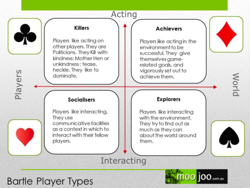
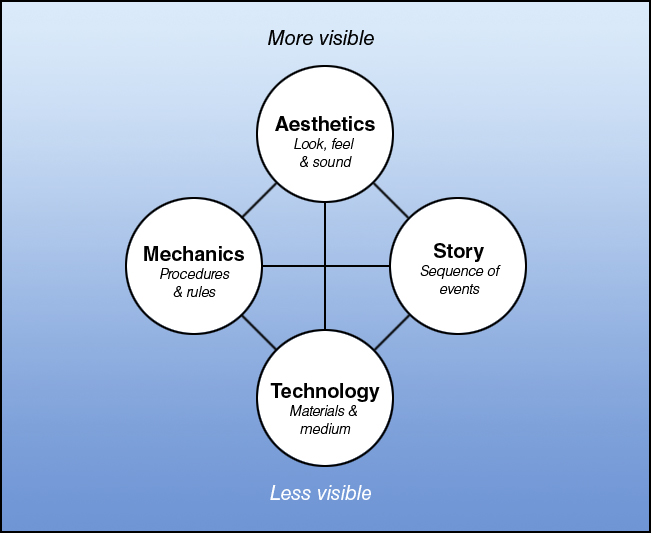
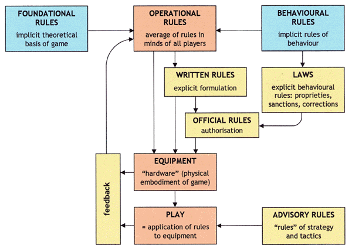
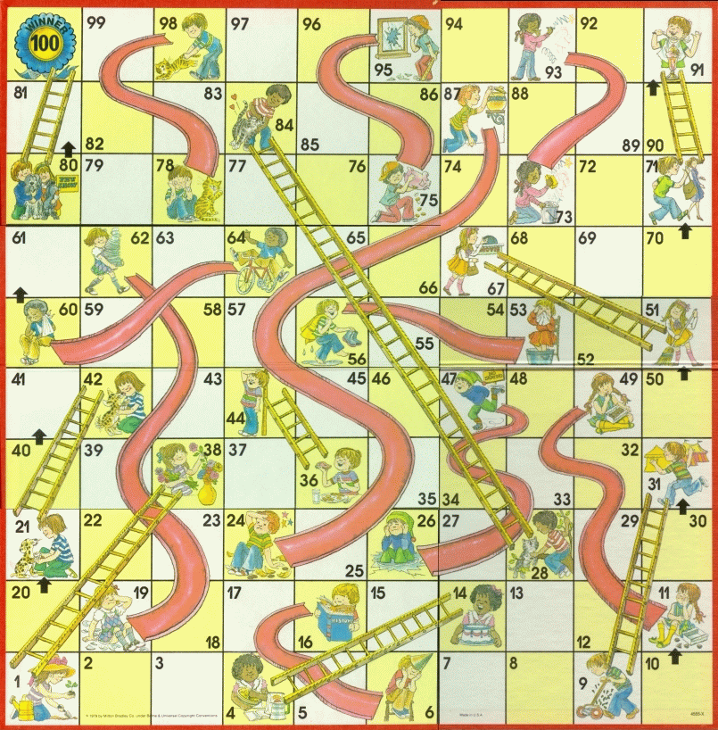
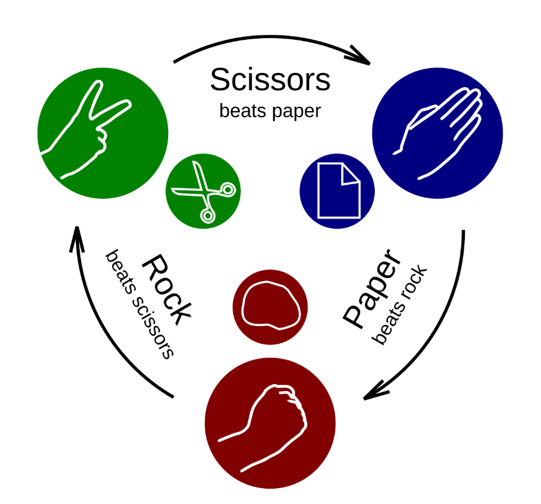

Game design is the process of designing the content and rules of a game in the pre-production stage and
involves concepts such as gameplay, environment, storyline, and characters. Game design requires artistic
vision, technical knowledge, and an understanding of how players will interact with the game.
A
game designer
creates the core mechanics of a game, including its rules, objectives, challenges, and rewards. They
also
design the user interface and overall user experience to ensure that players can easily navigate and enjoy the
game.
Design is a way to ask questions. Design research, when it occurs through the practice of design itself, is a way to ask larger questions beyond the limited scope of a particular design problem. When design research is integrated into the design process, new and unexpected questions emerge directly from the act of design.
One such research design methodology: the iterative design process, is a design methodology based on a cyclic process of prototyping, testing, analyzing, and refining a work in progress.
In iterative design, interaction with the designed system is used as a form of research for informing and evolving a project, as successive versions, or iterations of a design are implemented.
Because the experience of a viewer/user/player/etc cannot ever be completely predicted, in an iterative process design decisions are based on the experience of the prototype in progress. The prototype is tested, revisions are made, and the project is tested once more. In this way, the project develops through an ongoing dialogue between the designers, the design, and the testing audience.
In the case of games, iterative design means playtesting.
Throughout the entire process of design and development, your game is played. You play it. The rest of the development team plays it. Other people in the office play it. People visiting your office play it. You organize groups of testers that match your target audience. You have as many people as possible play the game. In each case, you observe them, ask them questions, then adjust your design and playtest again.

This iterative process of design is radically different than typical retail game development. More often than not, at the start of the design process for a computer or console title, a game designer will think up a finished concept and then write an exhaustive design document that outlines every possible aspect of the game in minute detail. Invariably, the final game never resembles the carefully conceived original. A more iterative design process, on the other hand, will not only streamline development resources, but will also result in a more robust and successful final product.
Game development is the process of creating a game from concept to final product. It involves a multidisciplinary approach that includes game design, programming, art and animation, sound design, and testing. Game development typically involves several stages, including pre-production, production, and post-production. During pre-production, the game concept is developed, and the game's mechanics and features are defined. In the production stage, the game is built, and assets such as graphics, sound effects, and music are created. Finally, in post-production, the game is tested for bugs and glitches, and any necessary changes are made before the game is released to the public.
The game development process typically involves several stages, including:
- Concept Development: This stage involves brainstorming and developing the initial concept for the game, including its genre, storyline, and gameplay mechanics.
- Pre-Production: In this stage, the game design document is created, and the game's mechanics, features, and art style are defined. The development team is assembled, and a project plan is created.
- Production: This stage involves building the game, creating assets such as graphics, sound effects, and music, and programming the game's mechanics and features.
- Testing: In this stage, the game is tested for bugs and glitches, and any necessary changes are made to improve gameplay and user experience.
- Post-Production: This stage involves finalizing the game, preparing it for release, and marketing the game to potential players.

In this course, we will be creating both traditional games like board games and card games. For these types of games, we will simply be using pen, paper, and any other physical materials we may need.
However, for video games, we will need to use a game engine. A game engine is a software framework designed for the creation and development of video games. It provides developers with a set of tools and features that simplify the game development process, allowing them to focus on creating the game's content rather than building everything from scratch. Game engines typically include features such as graphics rendering, physics simulation, audio processing, input handling, and scripting capabilities. Some popular game engines include Unity, Unreal Engine, Godot, and CryEngine. These engines are used by both indie developers and large game studios to create games for various platforms, including PC, consoles, and mobile devices.
Unity is a powerful and widely used game engine that provides a comprehensive set of tools and features for game development. It supports 2D and 3D game development, as well as virtual reality (VR) and augmented reality (AR) experiences. Unity offers a user-friendly interface, a robust asset store, and a large community of developers, making it an excellent choice for both beginners and experienced game developers.
We will be using the free version of Unity, which provides access to most of the engine's features and is suitable for small to medium-sized projects. You can download Unity for free from the official website: https://unity.com/. Make sure to check the system requirements to ensure that your computer meets the necessary specifications to run Unity smoothly.
Game development tools are software applications and frameworks that assist developers in creating, designing, and managing various aspects of game development. These tools can range from game engines to asset creation software, version control systems, and project management tools. Here are some common types of game development tools:
- Game Engines: As mentioned earlier, game engines like Unity, Unreal Engine, and Godot provide a comprehensive set of tools for building and deploying games across multiple platforms.
- Asset Creation Software: Tools like Blender, Maya, and 3ds Max are used for creating 3D models, animations, and textures. For 2D art, software like Adobe Photoshop, Illustrator, and GIMP are commonly used.
- Audio Tools: Software like Audacity, FL Studio, and Ableton Live are used for creating and editing sound effects and music for games.
- Version Control Systems: Tools like Git, SVN, and Perforce help developers manage changes to their codebase and collaborate with team members.
- Project Management Tools: Applications like Trello, Jira, and Asana help teams organize tasks, track progress, and manage deadlines.
- Testing and Debugging Tools: Tools like Unity Test Framework, NUnit, and Visual Studio Debugger assist developers in identifying and fixing bugs in their games.
- Collaboration Tools: Platforms like Slack, Discord, and Microsoft Teams facilitate communication and collaboration among team members.
These tools are essential for streamlining the game development process, improving productivity, and ensuring the successful completion of a game project.
In this class, you will work both individually and in teams to create games. Working in a team allows you to collaborate with others, share ideas, and divide tasks based on individual strengths and skills. Here are some common roles in a game development team:
- Game Designer: Responsible for creating the game's concept, mechanics, and overall design.
- Programmer: Writes the code that brings the game to life, implementing gameplay mechanics, AI, and other features.
- Artist: Creates the visual elements of the game, including characters, environments, and UI design.
- Animator: Brings characters and objects to life through animation.
- Sound Designer: Creates sound effects and music to enhance the game's atmosphere.
- Producer/Project Manager: Oversees the development process, manages timelines, and ensures the project stays on track.
- Tester/QA: Tests the game for bugs and provides feedback on gameplay and user experience.
Effective communication and collaboration are key to a successful game development team. Regular meetings, clear documentation, and a shared vision for the project can help ensure that everyone is on the same page and working towards a common goal.
In this course, you will all learn the basics of game design and development, and you will have the opportunity to take on different roles within your teams. This will give you a well-rounded understanding of the game development process and help you develop skills that are valuable in the industry.
Remember, the most important aspect of game development is to have fun and be creative! Don't be afraid to experiment with new ideas and approaches, and always be open to feedback and collaboration with your teammates.
Over the course of this class, you will learn the basics of game design and development, which can open up various career opportunities in the game industry. Here are some common career paths in game development:
- Game Designer: Responsible for creating the game's concept, mechanics, and overall design.
- Game Programmer: Writes the code that brings the game to life, implementing gameplay mechanics, AI, and other features.
- Game Artist: Creates the visual elements of the game, including characters, environments, and UI design.
- Game Animator: Brings characters and objects to life through animation.
- Sound Designer/Composer: Creates sound effects and music to enhance the game's atmosphere.
- Game Producer/Project Manager: Oversees the development process, manages timelines, and ensures the project stays on track.
- Quality Assurance (QA) Tester: Tests the game for bugs and provides feedback on gameplay and user experience.
- Level Designer: Designs and builds the levels and environments within the game.
- Game Writer/Narrative Designer: Develops the storyline, dialogue, and character development.
- Community Manager: Engages with the game's community, manages social media, and gathers player feedback.
So we know what game design and game development are, but what exactly is a game?
Brainstorm: Try to think of four different games. Write down the names of the games, and a few
words
about what each game is like.
Try to think of games that are very different from each other. For
example,
you might
include chess, tag, poker, and Minecraft. What do these games have in common? How are they different?
So how would you define a game? What makes something a game?
Are there games that do not fit this definition? Are there non-games that do fit this definition?
We can start with the following definition:
A game is something you play.
But this definition is a bit too broad. For example, you can play with a toy, but a toy is not a game. More specifically, a toy is an object that you can play with.
However, this is still quite broad. You might play with a roll of tape, while idly sitting at your desk, but does that make it a toy? Technically, yes, but probably not a very good one. In fact, anything you play with could be classified as a toy. Perhaps it is a good idea for us to start considering what makes for a good toy.
"Fun" is one word that comes to mind in conjunction with good toys. In fact, you might say: A good toy is an object that is fun to play with.
See how we have expanded our definition? Still, what do we mean when we say "fun"? Do we simply mean pleasure, or enjoyment? Pleasure is part of fun, but is fun simply pleasure? There are lots of experiences that are pleasurable, for example, eating a sandwich or lying in the sun, but it would seem strange to call those experiences "fun".
Generally, things that are fun have a special sparkle, a special excitement to them. Generally, fun things involve surprises. So a definition for fun might be: Fun is pleasure with surprises.
Surprise is a crucial part of all entertainment—it is at the root of humor, strategy, and problem solving. Our brains are hardwired to enjoy surprises. In an experiment where participants received sprays of sugar water or plain water into their mouths, the participants who received random sprays considered the experience much more pleasurable than participants who received the sprays according to a fixed pattern, even though the same amount of sugar was delivered. In other experiments, brain scans revealed that even during unpleasant surprises, the pleasure centers of the brain are triggered.
What are some examples of surprises? Here are a few:
- In a card game, you might be dealt a hand of cards that is much better than you expected.
- In a movie, you might be shocked by an unexpected plot twist.
- In a puzzle game, you might figure out a solution that you hadn't considered before.
When designing games, it is important to consider how to create surprises that will delight players. Surprises can come in many forms, such as unexpected challenges, plot twists, or hidden rewards. By incorporating surprises into the game design, developers can create a more engaging and enjoyable experience for players.
Ask yourself the following:
- What will surprise players when they play my game?
- Does the story in my game have surprises? Do the game rules? Does the artwork? The technology?
- Do your rules give players ways to surprise each other?
- Do your rules give players ways to surprise themselves?
Fun is desirable in nearly every game, although sometimes fun defies analysis.
To maximize a game's fun, ask yourself these questions:
- What parts of my game are fun? Why?
- What parts need to be more fun?
So, back to toys. We say that a toy is an object you play with, and a good toy is an object that is fun to play with. But what do we mean by play?
We all know what play is when we see it, but it is hard to express. Many people have tried for a solid definition of what play means, and most of them seem to have failed in one way or another. Let's consider a few:
- "Play is the aimless expenditure of exuberant energy." —Friedrich Schiller
- "Play refers to those activities which are accompanied by a state of comparative pleasure, exhilaration, power, and the feeling of self-initiative." —J. Barnard Gilmore
- "Play is free movement within a more rigid structure." —Katie Salen and Eric Zimmerman
- "Play is whatever is done spontaneously and for its own sake." —George Santayana
These definitions are all interesting, but they all seem to fall short in some way. For example, the first definition seems to exclude a lot of play that is not particularly energetic, such as playing chess. The second definition seems to exclude play that is not particularly pleasurable, such as playing a difficult puzzle game. The third definition seems to exclude play that is not particularly structured, such as freeform role-playing. The fourth definition seems to exclude play that is not particularly spontaneous, such as playing a game with rules.
So, what exactly is play?
Play can be summarized in roughly three aspects:
- Perform → players are active participants
- Pretend → Not reality. If games are reality, "they're no longer games -- they're life."
- Not work → Entertainment. "But, in the end, if it isn't fun, it's not a game; it's training or therapy. Or, unfortunately, a waste of time and money."
We've come up with some definitions for toys and fun and even made a good solid run at play. Let's try again to answer our original question: How should we define "game"?
Let's look at four distinct definitions of a game:
According to game designer Kevin Maroney, a game is: A game is a form of play with goals and structure.
We can break this definition down into its parts:
- Play: A game is a form of play. Play is an activity that is performed for its own sake, not for practical purposes. Play is often characterized by imagination, creativity, and spontaneity.
- Goals: A game has goals. Goals give players something to strive for and provide a sense of purpose
and
direction such as score, or winning condition.
A game's goal does not have to produce winners and losers. Cooperative games (such as the games in Sid Sackson's Beyond Competition) allow every player to win if the goals are reached, and in Earthball, a noncompetitive sport invented in the 1970s, play continues indefinitely until the game is won.
Role-playing games (which stretch the definition of games in so many ways) usually have neither winners nor losers. An individual player can achieve his or her own goals without preventing other players from achieving theirs. Players' goals tend to be ad hoc (succeed in a particular mission for the Emperor) or long-term milestones in a career rather than ending points (become a high-ranking noble). A referee's goals are even more nebulous— presenting a credible challenge to the players, advancing a storyline, bringing a particular object into play—and usually revolve around creating an entertaining atmosphere for the players. A referee who views the success of the players as a personal failure and vice versa is not likely to get a lot of repeat play
- Structure: A game has structure. Structure provides the framework within which players can engage in play and pursue their goals. Structure can include rules, mechanics, and systems that govern how the game is played -- e.g. a referee.
Game designer Jane McGonigal, believes that when you strip away the genre differences and the technological complexities, all games share four defining traits:
- A goal: A game is a challenge with a clear outcome. Players must work to achieve a specific objective, whether it's reaching the finish line, solving a puzzle, or defeating an opponent.
- Rules: A game has rules that define how players can interact with the game world and each other. Rules create structure and provide a framework for gameplay.
- Feedback system: A game provides feedback to players based on their actions. This feedback can come in the form of points, rewards, or penalties, and helps players understand how well they are doing in the game.
- Voluntary participation: A game is something that players choose to engage in voluntarily. Players must be willing to participate and follow the rules of the game in order for it to be considered a game.
In the words of the late, great philosopher, Bernard Suits: "Playing a game is the voluntary attempt to overcome unnecessary obstacles"
Game designer Jesse Schell, on the other hand, defines a game as: a problem-solving activity, approached with a playful attitude (what philosopher Bernard Suits calls a "lusory attitude" (from the Latin ludus, play))
We can actually see this theory in the film Mary Poppins (1964), as the titular character is about the sing the song "A Spoonful of Sugar". The children are given the task of cleaning up their room, which is a chore or job, however, Mary Poppins turns it into a game by adding a playful attitude and making it fun.
And lastly, according to game designer Chris Crawford, a game is: an interactive, goal-oriented activity, with active agents to play against, in which players (including active agents) can interfere with each other.
Crawford's four main principles are as such:
- A piece of entertainment is a plaything if it is interactive. Movies and books are cited as examples of non-interactive entertainment.
- If no goals are associated with a plaything, it is a toy. (Crawford notes that by his definition, (a) a toy can become a game element if the player makes up rules, and (b) The Sims and SimCity are toys, not games.) If it has goals, a plaything is a challenge.
- If a challenge has no "active agent against whom you compete", it is a puzzle; if there is one, it is a conflict.
- Finally, if the player can only outperform the opponent, but not attack them to interfere with their performance, the conflict is a competition. (Competitions include racing and figure skating.) However, if attacks are allowed, then the conflict qualifies as a game.

In what way do the definitions above inform design?
- Fundamentals - know what to include
- Expanded genres help guide design
- Designing game - purpose - entertainment, competition, etc?
- Constraints limit what the designer can do
Brainstorm: Choose an activity that is not typically considered a game (e.g. waiting for the bus). Now turn it into a game. How will you do that?
What makes a game fun? This is a question that has been debated by game designers and players alike for decades.
Unfortunately, fun is often subjective and hard to describe something that's fun to someone unless they know your tastes and preferences. It's why we use games we enjoy playing to let people know what kind of fun we like to have. We can all agree that fun has an element of pleasure, but what does that really mean?
LeBlanc's 8 Kinds of Fun
Game designer Marc LeBlanc has proposed a list of eight pleasures that he considers the primary "game pleasures".
- Sensation - "To function as an art object, to look, sound or feel beautiful."
- Marc LeBlanc, MDA Framework
Game as sense-pleasure. This is the most basic kind of fun, and it is often overlooked. Sensation is the pleasure we get from the sensory experience of playing a game. These are games that engage the senses directly. This can include the visual and auditory elements of the game, as well as the tactile experience of using a controller or mouse. RPGs that have minis, terrain, handouts, and things we can touch, pick up, and interact with physically, also exist in this kind of fun.
Seeing something beautiful, hearing music, touching silk, and smelling or tasting delicious food are all pleasures of sensation. It is primarily the aesthetics of your game that will deliver these pleasures.
Sensory pleasure is often the pleasure of the toy. This pleasure cannot make a bad game into a good one, but it can often make a good game into a better one. - Fantasy - "A game to be about something, a vehicle for make-believe."
- Marc LeBlanc, MDA Framework
Game as make-believe. Fantasy is the pleasure we get from immersing ourselves in a fictional world. This can include the story, characters, and setting of the game. These games don't exist in our world, or if they do the world is changed enough that we can suspend our disbelief and separate from the everyday for a little while. More so, we can take on the personas of people and visit places that only exist in our wildest dreams. D&D is the classic fantasy game. Take up arms and battle mystical and fantastical monsters and foes in a world of swords and sorcery. - Narrative - "The ability for a game to function as a story, to unfold over time... think about a
movie about a sporting event... there's story
content in the sporting event itself. Those things form a narrative."
- Marc LeBlanc, MDA Framework
Game as drama. Narrative is the pleasure we get from experiencing a story through gameplay. This can include the plot, dialogue, and character development of the game. When it comes to RPGs this element of fun is all encompassing. Every RPG I have ever encountered has narrative as a part of its fun. Often we play RPGs to create or experience stories, from ones that are embedded into the games we're playing where we only have a minimal impact on how they play out, to games that let us build everything about the narrative, and every game that lands somewhere in between. If you enjoy storytelling, then narrative is your kind of fun. - Challenge - "The ability of a game to provide you obstacles to overcome, problems to solve, plans
to form."
- Marc LeBlanc, MDA Framework
Game as obstacle course. Challenge is the pleasure we get from overcoming obstacles and achieving goals in a game. This can include the difficulty level, puzzles, and combat mechanics of the game. - Fellowship - "All of the social aspects of games; the ability for a game to function as a social
framework. All the ways in which games facilitate
human interaction."
- Marc LeBlanc, MDA Framework
Game as social framework. Fellowship is the pleasure we get from playing games with others. This can include multiplayer modes, co-op gameplay, and social features of the game. A lot of games are about being social: Apples to Apples, or Cards Against Humanity, are about bringing people together to socialize and the activity is secondary. Yes, there's a win condition in those games, but the experience, humor, and camaraderie that happens during the game is more important than the game itself. If gaming is more about the people and hanging out with your friends, then your fun is found in fellowship. - Discovery - "An opportunity for a game to function as uncharted territory -- you could be a tourist
walking around Disneyland, or you could be
a tourist in the tech tree in Civilization and exploring it. To see a new space and become a master over it
-- that's what I call discovery."
- Marc LeBlanc, MDA Framework
Game as uncharted territory. Discovery is the pleasure we get from exploring new worlds and uncovering hidden secrets in a game. This can include open-world exploration, hidden items, and Easter eggs in the game. - Expression - "Whether it's how you dress your avatar or it's how you play. Using the game as a
vehicle for expressing yourself."
- Marc LeBlanc, MDA Framework
Game as self-discovery. Expression is the pleasure we get from expressing ourselves through gameplay. This can include character customization, creative modes, and player choice in the game. - Submission - "The pleasure of a game as a mindless pastime, like the pleasure of knitting or
organizing CDs on a shelf. Some people play
solitaire because it's an interesting problem; some play it for the pleasure of moving the cards around. The
second is submission."
- Marc LeBlanc, MDA Framework
Game as pastime. Submission is the pleasure we get from simply playing a game for the sake of playing. This can include casual games, mobile games, and games that are easy to pick up and play.
These eight types of fun aren't exclusive to each other, more like dials that get turned up and down for
different experiences. Board, Card, Video, and Role Playing Games are all made up of different kinds of fun.
Within those categories of games there are even more variations.
Think of the difference in the
kind of fun
that one has in a game of chess versus a game of Candy Land. Both are board games, but they offer very
different
kinds of fun. Chess is a game of challenge and strategy, while Candy Land is a game of submission and chance.
Different games will emphasize different kinds of fun, and players will have different preferences for which kinds of fun they enjoy the most. As a game designer, it's important to understand these different kinds of fun and to design games that cater to the preferences of your target audience.
Lazzaro's 4 Keys 2 Fun
Early in 2000 (2003 / 2004), Game designer Nicole Lazzaro and XEODesign (her company), conducted some research into why we play games. They surveyed players and non players, observed them, recorded them and interviewed them to assess the emotions that they felt during play.
They found that there were four main types of fun that players experienced while playing games. These four types of fun are:
- Hard Fun - The pleasure of overcoming challenges and achieving goals. This type of fun is often associated with games that require skill and strategy, such as puzzle games and action games.
- Easy Fun - The pleasure of exploration and discovery. This type of fun is often associated with games that allow players to explore new worlds and uncover hidden secrets, such as open-world games and adventure games.
- Serious Fun - The pleasure of meaningful experiences and emotional engagement. This type of fun is often associated with games that tackle serious themes and issues, such as narrative-driven games and educational games.
- People Fun - The pleasure of social interaction and collaboration. This type of fun is often associated with multiplayer games and games that encourage players to work together, such as cooperative games and party games.

Based on both LeBlanc and Lazzarro, ask yourself the following:
- Which of these pleasures do I most enjoy in games?
- Which of these pleasures do I least enjoy in games?
- Which of these pleasures do I want to include in my game designs?
- Which of these pleasures do I want to avoid in my game designs?
It is useful to examine these 8 different types of fun/pleasures, because different individuals place different values on each one.
Game designer Richard Bartle, who has spent many years designing MUDs (multi-user dungeons)and other online games, observes that players fall into four main groups in terms of their game pleasure preferences. Bartle's four types are easy to remember, because they have the suits of playing cards as a convenient mnemonic.
- ♦ Achievers want to achieve the goals of the game. Their primary pleasure is challenge. These players are motivated by in-game goals and achievements. They enjoy completing quests, earning points, and collecting items. Achievers are often competitive and strive to be the best in the game.
- ♠ Explorers want to get to know the breadth of the game. Their primary pleasure is discovery. These players are motivated by curiosity and the desire to discover new things. They enjoy exploring the game world, uncovering hidden secrets, and experimenting with game mechanics. Explorers are often more interested in the journey than the destination.
- ♥ Socializers are interested in relationships with other people. They primarily seek the pleasures of fellowship. These players are motivated by social interaction and building relationships with other players. They enjoy chatting, forming alliances, and participating in group activities. Socializers are often more interested in the community than the game itself.
- ♣ Killers are interested in competing with and defeating others. These players are motivated by competition and the desire to dominate other players. They enjoy PvP (player versus player) combat, causing chaos, and asserting their dominance in the game world. Killers are often more interested in winning than in the game itself.
Bartle's taxonomy has been widely adopted in the game industry and has influenced the design of many games, particularly online multiplayer games. By understanding the different player types, game designers can create games that cater to the preferences and motivations of their target audience.
Bartle also proposes a fascinating graph (below) that shows how the four types neatly cover a sort of space:
That is:
- Achievers are interested in acting on the world,
- Explorers are interested in interacting with the world,
- Socializers are interested in interacting with players,
- Killers are interested in acting on players
Here's a video explaining Bartle's taxonomy: Bartle's Taxonomy of Player Types
Ask yourself the following:
- Which of these player types do I most identify with?
- Which of these player types do I least identify with?
- Which of these player types do I want to include in my game designs?
- Which of these player types do I want to avoid in my game designs?
An example of player types:
Player Type Case Studies
Here are some examples of case studies describing a player, based on Bartle's taxonomy, how might they approach a game?
Case Study 1: Chris
Chris spends much of his time in Minecraft (creative mode), building strange contraptions and pushing the game's physics. He also enjoys puzzle games like Portal 2. While he usually plays solo, he sometimes uploads videos to YouTube—not for fame, but because he enjoys it when someone notices the cleverness of his designs.
- What seems most important to Chris when he plays?
- Do you think Chris would enjoy a game with no building or experimentation? Why or why not?
- How does sharing his work with others shape your interpretation of his motivations?
- Explorer: Strong — likes experimenting, discovering "how the game works."
- Achiever: Moderate — enjoys recognition and “accomplishing” quirky projects.
- Socializer: Minor — not very interactive, but he does seek acknowledgment.
- Killer: Minor — not focused on competition or dominance.
Case Study 2: Maria
Maria plays Breath of the Wild, Elden Ring, and Skyrim. She often wanders away from the main quest to explore hidden corners of the world. She enjoys sharing discoveries with friends afterward and appreciates the small achievements the game offers.
- What seems most important to Maria when she plays?
- Do you think Maria would enjoy a game with a strict linear storyline? Why or why not?
- How does her enjoyment of sharing discoveries with friends influence your understanding of her motivations?
- Explorer: Strong — loves exploring and uncovering secrets.
- Socializer: Moderate — enjoys sharing experiences with friends.
- Achiever: Minor — values small accomplishments but not the main focus.
- Killer: Minor — not focused on competition or dominance.
Case Study 3: Jake
Jake plays Valorant, Call of Duty: Warzone, and League of Legends. He loves intense matches and tracking his progress but also enjoys teaming with friends and interacting with viewers when streaming.
- What seems most important to Jake when he plays?
- Do you think Jake would enjoy a game without competitive elements? Why or why not?
- How does his streaming activity shape your interpretation of his motivations?
- Achiever: Strong — driven by competition and personal progress.
- Socializer: Moderate — values teamwork and community interaction.
- Killer: Minor — enjoys competition but not at the expense of others.
- Explorer: Minor — not focused on discovery or experimentation.
Case Study 4: Sophia
Sophia plays Among Us, Animal Crossing, World of Warcraft, and Jackbox Party Pack. She enjoys hosting game nights, coordinating events, and connecting with people. She also values when her group works together to accomplish something meaningful.
- What seems most important to Sophia when she plays?
- Do you think Sophia would enjoy a game focused solely on individual achievement? Why or why not?
- How does her enjoyment of hosting and coordinating events influence your understanding of her motivations ?
- Socializer: Strong — thrives on social interaction and community building.
- Achiever: Moderate — enjoys group accomplishments and meaningful goals.
- Explorer: Minor — appreciates new experiences but not the main focus.
- Killer: Minor — not focused on competition or dominance.
The Bartle Test is a simple quiz that can help you determine your player type. You can take the test here.
There are many ways to break down and classify the many elements that form a game. One way is to look at the four main elements that make up a game:
- Mechanics - These are the procedures and rules of your game.
Mechanics describe the goal of your game, how players can and cannot try to achieve it, and what happens when they try.
If you compare games to more linear entertainment experiences (books, movies, etc.), you will note that while linear experiences involve technology, story, and aesthetics, they do not involve mechanics, for it is mechanics that make a game a game.
When you choose a set of mechanics as crucial to your gameplay, you will need to choose technology that can support them, aesthetics that emphasize them clearly to players, and a story that allows your (sometimes strange) game mechanics to make sense to the players - Story - This is the sequence of events that unfolds in your game. It may be linear
and pre-scripted, or it may be branching and emergent.
When you have a story you want to tell through your game, you have to choose the mechanics that will both strengthen that story and let that story emerge.
Like any storyteller, you will want to choose the aesthetics that help reinforce the ideas of your story and the technology that is best suited to the particular story that will come out of your game. - Aesthetics - This is how your game looks, sounds, smells, tastes, and feels.
Aesthetics are an incredibly important aspect of game design since they have the most direct relationship to a player's experience.
When you have a certain look, or tone, that you want players to experience and become immersed in, you will need to choose a technology that will not only allow the aesthetics to come through but amplify and reinforce them. You will want to choose the mechanics that make players feel like they are in the world that the aesthetics have defined, and you will want a story with a set of events that let your aesthetics emerge at the right pace and have the most impact. - Technology - We are not exclusively referring to "high technology" here, but to
any materials and interactions that make your game possible such as paper and
pencil, plastic chits, or high-powered lasers.
The technology you choose for your game enables it to do certain things and prohibits it from doing other things. The technology is essentially the medium in which the aesthetics take place, in which the mechanics will occur, and through which the story will be told.
It is important to understand that none of the elements are more important than the others.
The tetrad is arranged here in a diamond shape not to show any relative importance but only to help illustrate the "visibility gradient", that is, the fact that technological elements tend to be the least visible to the players, aesthetics are the most visible, and mechanics and story are somewhere in the middle.
The important thing to understand about the four elements is that they are all essential. No matter what game you design, you will make important decisions about all four elements. None is more important than the others, and each one powerfully influences each of the others.
Example: Space Invaders
Consider the design of the game Space Invaders (Taito 1978) by Toshihiro Nishikado. If (somehow) you aren't familiar with the game, do a quick web search so that you understand the basics. We will consider the design from the points of view of the four basic elements:
- Technology - All new games need to be innovative in some way. The technology behind Space Invaders was custom designed for the game. It was the first video game that allowed a player to fight an advancing army, and this was only possible due to the custom motherboard that was created for it. An entirely new set of gameplay mechanics was made possible with this technology. It was created solely for that purpose.
- Mechanics - The gameplay mechanic of Space Invaders was new, which is
always exciting. But more than that, it was interesting and well balanced. Not
only does a player shoot at advancing aliens that shoot back at him, the player
can hide behind shields that the aliens can destroy (or that the player can choose
to destroy themself).
Further, there is the possibility to earn bonus points by shooting a mysterious flying saucer. There is no need for a time limit, because the game can end two ways: the player's ships can be destroyed by alien bombs and the advancing aliens will eventually reach the player's home planet. Aliens closest to the player are easier to shoot and worth fewer points. Aliens farther away are worth more points.
One more interesting game mechanic is that the more of the 48 aliens you destroy, the faster the invading army gets. This builds excitement and makes for the emergence of some interesting stories.
Basically, the game mechanics behind Space Invaders are very solid and well balanced and were very innovative at the time. - Story - This game didn't need to have a story. It could have been an abstract game where a triangle shoots at blocks. But having a story makes it far more exciting and easier to understand.
- Aesthetics - Some may sneer at the visuals, which now seem so primitive, but the
designer did a lot with a little. The aliens are not all identical. There are three different designs, each
worth a different amount of points. They each perform a
simple two-frame "marching" animation that is very effective. The display was not
capable of color—but a simple technology change took care of that!
Since the player was confined to the bottom of the screen, the aliens to the middle, and the saucer to the top, colored strips of translucent plastic were glued to the screen so that your ship and shields were green, the aliens were white, and the saucer was red. This simple change in the technology of the game worked only because of the nature of the game mechanics and greatly improved the aesthetics of the game.
Audio is another important component of aesthetics. The marching invaders made a sort of heartbeat noise, and as they sped up, the heartbeat sped up, which had a very visceral effect on the player. There were other sound effects that helped tell the story too. The most memorable was a punishing, buzzing crunch noise when your ship was hit with an alien missile.

But not all aesthetics are in the game! The cabinet for Space Invaders also had a design that was attractive and eye-catching that helped tell the story of the evil alien invaders.
Part of the key to the success of Space Invaders was that the four basic elements were all working hard toward the same goal — to let the player experience the fantasy of battling an alien army. Each of the elements made compromises for the other, and clearly deficits in one element often inspired the designer to make changes in another. These are the sort of clever insights you are likely to have when you view your design through the Lens of the Elemental Tetrad.
Game Mechanics
Game mechanics are the core of what a game truly is. They are the interactions and relationships that remain when all of the aesthetics, technology, and story are stripped away.
As with many things in game design, we do not have a universally agreed-upon taxonomy of game mechanics. One reason for this is that the mechanics of gameplay, even for simple games, tend to be quite complex and very difficult to disentangle. Attempts at simplifying these complex mechanics to the point of perfect mathematical understanding result in systems of description that are obviously incomplete.
But there is another reason that taxonomies of game mechanics are incomplete. On one level, game mechanics are very objective, clearly stated sets of rules. On another level, though, they involve something more mysterious.
Schell presents a taxonomy to classify game mechanics. These mechanics fall largely into seven main categories, and each one can provide useful insights on your game design.
- Space - Every game takes place in some kind of space. This space is the "magic circle"
of gameplay. It defines the various places that can exist in a game and how those
places are related to one another.
As a game mechanic, space is a mathematical construct. We need to strip away all visuals, all aesthetics, and simply look at the abstract construction of a game's space.
There are no hard and fast rules for describing these abstract, stripped-down game spaces. Generally, though, game spaces:- Are either discrete or continuous
- Have some number of dimensions
- Have bounded areas that may or may not be connected
For example, the game of chess takes place in a discrete space (the 64 squares on the chessboard), which has two dimensions (the X and Y coordinates of the board), and is bounded (the pieces cannot leave the board).
In contrast, the game of billiards takes place in a continuous space (the surface of the table), which also has two dimensions (the X and Y coordinates of the table), and is bounded (the balls cannot leave the table).
A game like the original Super Mario Bros. takes place in a discrete space (the individual screens that make up the levels), which has two dimensions (the X and Y coordinates of the screen), and is bounded (the player cannot leave the screen).
A game like The Legend of Zelda: Breath of the Wild takes place in a continuous space (the open world), which has three dimensions (the X, Y, and Z coordinates of the world), and is bounded (the player cannot leave the world).Nested Spaces
Many game spaces feature "spaces within spaces".
Computer-based fantasy role-playing games are a good example of this. Most of them feature an "outdoor space" that is continuous and 2D. A player traveling this space sometimes encounters little icons representing towns, or caves, or castles. Players can enter these as completely separate spaces, not really connected in any way to the "outdoor space" but through the gateway icon.
This is not geographically realistic, of course—but it matches our mental models of how we think about spaces — when we are indoors we think about the space inside the building we are in, with little thought to how it exactly relates to the space outside. For this reason, these "spaces within spaces" are often a great way to create a simple representation of a complex world.
Zero Dimensions
Does every game take place in a space? Consider a game like "Twenty Questions", where one player thinks of an object, and the other player asks "yes or no" questions trying to guess what it is.
There is no game board and nothing moves — the game is just two people talking. You might argue that this game has no space.
But you would be wrong. The mind of the answerer contains the secret object. The mind of the questioner is where all the weighing of the previous answers is going on, and the conversation space between them is how they exchange information.
Every game has some kind of information or "state", and this has to exist somewhere. So, even if a game takes place in a single point of zero dimensions, it can be useful to think of it as a space. You may find that figuring out an abstract model for a game whose space seems to be trivial may lead you to insights about it that surprise you.
When thinking about game spaces, it is easy to be swayed by aesthetics. There are many ways to represent your game space, and they are all good, as long as they work for you. When you can think of your space in these pure abstract terms, it helps you let go of assumptions about the real world, and it lets you focus on the kinds of gameplay interactions you would like to see. Of course, once you have manipulated the abstract space so that you are happy with its layout, you will want to apply aesthetics to it.
If you can simultaneously see your abstract functional space and the aesthetic space the player will experience, as well as how they interrelate, you can make confident decisions about the shape of your game's world.
- Time - In the real world, time is the most mysterious of dimensions. Against our will, we
travel through it, ever forward, with no way to stop, turn around, slow down, or
speed up.
In games, however, time is a mechanic that can be manipulated in various ways.Discrete and Continuous Time
Just as space in games can be discrete or continuous, so can time.
We have a word for the unit of discrete time in a game: the "turn". Generally, in turn-based games, time matters little. Each turn counts as a discrete unit of time, and the time between turns, as far as the game is concerned, doesn't exist. Scrabble games, for example, are generally recorded as a series of moves, with no record of the amount of time that each move took, because real clock time is irrelevant to the game mechanics.
Of course, there are many games that are not turn based, but instead operate in continuous time. Most action video games are this way, as are most sports. And some games use a mix of time systems. Tournament chess is turn-based but has a continuous clock to place time limits on each player.
Clocks and Races
Clocks of varying types are used in many games, to set absolute time limits for all kinds of things.
The "sand timer" used in Boggle, the game clock in American football, and even the duration of Mario's jump in Donkey Kong are different kinds of "clock" mechanisms, designed to limit gameplay through absolute measure of time.
Just as there can be nested spaces, sometimes time is nested, as well. Basketball, for instance, is often played with a game clock to limit the length of total play but also with a much shorter "shot clock" to help ensure players take more risks, keeping the gameplay interesting.
Other measures of time are more relative—we usually refer to these as "races". In the case of a race, there is not a fixed time limit, but rather pressure to be faster than another player. Sometimes this is very obvious, like in an auto race, but other races are more subtle, such as my race in Space Invaders to destroy all the invading aliens before they manage to touch the ground.
There are many games, of course, where time is not a limiting factor, but it is still a meaningful factor. In baseball, for example, innings are not timed, but if the game goes on too long, it can exhaust the pitcher, making time an important part of the game.
Controlling Time
Games give us the chance to do something we can never do in the real world: control time. This happens in a number of fascinating ways. Sometimes we stop time completely, as when a "time-out" is called in sporting match or when the "pause" button is pushed on a video game.
Occasionally, we speed up time, as happens in games like Civilization, so that we can see years pass in just seconds. But most often, we rewind time, which is what happens every time you die in a video game and return to a previous checkpoint. Some games, such as Braid, go so far as to make manipulation of game time a central mechanic.
- Objects/Attributes/States - A space without anything in it is, well, just a space.
Your game space will surely have objects in it. Characters, props, tokens, scoreboards, or anything that can be seen or manipulated in your game falls into this category. Objects are the “nouns” of game mechanics. Technically, there are times you might consider the space itself an object, but usually the space of your game is different enough from other objects that it stands apart.
Objects generally have one or more attributes, one of which is often the current position in the game space.
Attributes are categories of information about an object. For example, in a racing game, a car might have maximum speed and current speed as attributes. Each attribute has a current state.
The state of the "maximum speed" attribute might be 150 mph, while the state of the "current speed" attribute might be 75 mph if that is how fast the car is going. Maximum speed is not a state that will change much, unless perhaps you upgrade the engine in your car. Current speed, on the other hand, changes constantly as you play. - Actions - The next important game mechanic is the action. Actions are the "verbs" of game
mechanics. There are two perspectives on actions or, put another way, two ways to
answer the question "What can the players do?"
The first kind of action is the basic action. These are simply the base actions a player can take.
For example, in checkers, a player can perform only three basic operations:- Move a checker forward
- Jump an opponent's checker
- Move a checker backwards (kings only)
The second kind of action is strategic action. These are actions that are only meaningful in the larger picture of the game—they have to do with how the player is using basic actions to achieve a goal. The list of strategic actions is generally longer than the list of basic actions.
Consider some possible strategic actions in checkers:- Protect a checker from being captured by moving another checker behind it
- Force an opponent into making an unwanted jump
- Sacrifice a checker to trick your opponent
- Build a "bridge" to protect your back row
- Move a checker into the "king row" to make it a king.
As you can see, strategic actions are more complex and involve a deeper understanding of the game mechanics. They often require planning and foresight, as well as an understanding of the opponent's potential responses.
- Rules - The rules are really the most fundamental mechanic. They define the space, the
timing, the objects, the actions, the consequences of the actions, the constraints on
the actions, and the goals. In other words, they make possible all the mechanics we
have seen so far and add the crucial thing that makes a game a game — goals.
Parlett's Rule Analysis
David Parlett, game historian, did a very good job of analyzing the different kinds of rules that are involved with gameplay, as shown in this diagram:
This shows the relationships between all the kinds of rules we are likely to encounter, so let's consider each.
- Operational rules: These are the easiest to understand. These are basically "What the players do to play the game". When players understand the operational rules, they can play a game.
- Foundational rules: The foundational rules are the underlying formal structure
of the game. The operational rules might say "The player should roll a six-sided
die, and collect that many power chips". The foundational rules would be more
abstract: "The player's power value is increased by a random number from 1 to
6".
Foundational rules are a mathematical representation of game state and how and when it changes. Boards, dice, chips, health meters, etc., are all just operational ways of keeping track of the foundational game state. As Parlett's diagram shows, foundational rules inform operational rules. There is not yet any standard notation for representing these rules, and there is some question about whether a complete notation is even possible.
In real life, game designers learn to see the foundational rules on an as-needed basis, but seldom do they have any need to formally document the entire set of foundational rules in a completely abstract way. - Behavioral rules: These are rules that are implicit to gameplay, which most people naturally understand as part of "good sportsmanship". For example, during a game of chess, one should not tickle the other player while they are trying to think or take five hours to make a move. These are seldom stated explicitly— mostly, everyone knows them. The fact that they exist underlines the point that a game is a kind of social contract between players. These, too, inform the operational rules.
- Written rules: These are the "rules that come with the game", the document that
players have to read to gain an understanding of the operational rules. Of course,
in reality, only a small number of people read this document—most people learn
a game by having someone else explain how to play. Why? It is very hard to
encode the nonlinear intricacies of how to play a game into a document and
similarly hard to decode such a document.
Modern video games have gradually been doing away with written rules in favor of having the game itself teach players how to play through interactive tutorials. This hands-on approach is far more effective, though it can be challenging and time consuming to design and implement as it involves many iterations that cannot be completed until the game is in its final state. Every game designer must have a ready answer to the question: "How will players learn to play my game?"" Because if someone can't figure out your game, they will not play it. - Laws: These are only formed when games are played in serious, competitive settings, where the stakes are high enough that a need is felt to explicitly record the rules of good sportsmanship or where there is need to clarify or modify the official written rules. These are often called "tournament rules", since during a serious tournament is when there is the most need for this kind of official clarification.
- Official rules: These are created when a game is played seriously enough that a group of players feels a need to merge the written rules with the laws. Over time, these official rules later become the written rules. In chess, when a player makes a move that puts the opponent's king in danger of checkmate, that player is obligated to warn the opponent by saying "check". At one time, this was a "law", not a written rule, but now it is part of the "official rules".
- Advisory rules: Often called "rules of strategy", these are just tips to help you play better, and not really "rules" at all from a game mechanics standpoint.
- House rules: These rules are not explicitly described by Parlett, but he does point out that as players play a game, they may find they want to tune the operational rules to make the game more fun. This is the "feedback" on his diagram, since house rules are usually created by players in response to a deficiency perceived after a few rounds of play
Modes
Many games have very different rules during different parts of play. The rules often change completely from mode to mode, almost like completely separate games.
One memorable instance was the racing game Pitstop. Most of the time, it was a typical racing game but with a twist—if you didn't pull over to change your tires periodically, they would burst. When you did pull over, the game changed completely— now you were not racing your car, but rather racing to change your tires, with a completely different game interface.
When your game changes modes in a dramatic way like this, it is very important that you let your players know which mode you are in. Too many modes and the players can get confused. Very often, there is one main mode, with several submodes, which is a good hierarchical way to organize the different modes.
Game designer Sid Meier proposes an excellent rule of thumb: players should never spend so much time in a subgame that they forget what they were doing in the main game.
Goals
Games have a lot of rules — how to move and what you can and cannot do — but there is one rule at the foundation of all the others: the object of the game.
Games are about achieving goals — you must be able to state your game's goal and state it clearly. Often, there is not just one goal in a game, but a sequence of them—you will need to state each and how they relate to one another.
When a goal is set in a player's mind, it gives them tremendous motivation to see it through. Having a clear set of well-constructed goals or quests is crucial to keeping your players engaged and motivated.
Good game goals are as follows:- Concrete: Players understand and can clearly state what they are supposed to achieve.
- Achievable: Players need to think that they have a chance of achieving the goal. If it seems impossible to them, they will quickly give up.
- Rewarding: A lot goes into making an achieved goal rewarding. If the goal has
the right level of challenge, just achieving it at all is a reward in itself. But why
not go further? You can make your goal even more rewarding by giving the
player something valuable upon reaching the goal.
And while it is important to reward players that achieve a goal, it is equally (or more) important that players appreciate that the goal is rewarding before they have achieved it, so that they are inspired to attempt to achieve it.
Don't overinflate their expectations, though, for if they are disappointed with the reward for achieving a goal, they will not play again!
- Skill - The mechanic of skill shifts the focus away from the game and onto the player.
Every game requires players to exercise certain skills. If the player's skill level is a
good match to the game's difficulty, the player will feel challenged and stay in the
flow channel.
Most games do not just require one skill from a player — they require a blend of different skills. When you design a game, it is a worthwhile exercise to make a list of the skills that your game requires from the player.
Even though there are thousands of possible skills that can go into a game, skills can generally be divided into three main categories:- Physical skills: These include skills involving strength, dexterity, coordination, and physical endurance. Physical skills are an important part of most sports. Effectively manipulating a game controller is a kind of physical skill, but many video games (such as camera-based dance games) require a broader range of physical skills from players.
- Mental skills: These include the skills of memory, observation, and puzzle solving. Although some people shy away from games that require too much in the way of mental skills, it is the rare game that doesn't involve some mental skills, because games are interesting when there are interesting decisions to make, and decision making is a mental skill.
- Social skills: These include, among other things, reading an opponent (guessing what they are thinking), fooling an opponent, and coordinating with teammates. Typically, we think of social skills in terms of your ability to make friends and influence people, but the range of social and communication skills in games is much wider. Poker is largely a social game, because so much of it rests on concealing your thoughts and guessing the thoughts of others. Sports are very social, as well, with their focus on teamwork and on "psyching out" your opponents.
- Chance - Our seventh and final game mechanic is chance. We deal with it last because it
concerns interactions between all of the other six mechanics: space, time, objects,
actions, rules, and skills.
Chance is an essential part of a fun game because chance means uncertainty, and uncertainty means surprises. And as we have discussed earlier, surprises are an important source of human pleasure and the secret ingredient of fun.
Designing your game mechanics based on player types
As we now know, there are four player types: Achievers, Explorers, Socializers, and Killers. Each type of player is motivated by different aspects of a game, and understanding these motivations can help you design game mechanics that cater to each player type.
Achievers
Their main goals consist of rising in status, scoring-points, and completing tasks. To provide achievers what they want, our game will mostly use extrinsic mechanics such as points and status, achievement symbols (badges, trophies, medals, crowns…), progress bars, fixed rewards and so on.
Here are few examples for such game mechanics:
- Points and scoring systems
- Levels and experience points (XP)
- Achievements and badges
- Leaderboards and rankings
Some board and tabletop games include:
- Collecting resources (e.g., in Settlers of Catan)
- Building structures or empires (e.g., in Carcassonne)
- Completing quests or missions (e.g., in Dungeons & Dragons)
Explorers
Explorers are motivated by discovery, learning, and understanding the game world. To engage explorers, our game will focus on intrinsic mechanics such as exploration, puzzles, and hidden content.
Here are few examples for such game mechanics:
- Branching choices
- Puzzles and riddles
- Lore and backstory
Some board and tabletop games include:
- Exploring a map or board (e.g., in Betrayal at House on the Hill)
- Uncovering hidden information (e.g., in Clue)
- Story-driven campaigns full of mysteries, locations to explore, and hidden lore (e.g., in Arkham Horror)
Socializers
Socializers thrive on interaction with other players. To cater to socializers, our game will incorporate mechanics that encourage collaboration, communication, and social interaction.
Here are few examples for such game mechanics:
- Chat and messaging systems
- Guilds or clans
- Cooperative gameplay
- Trading and gifting
Some board and tabletop games include:
- Team-based games (e.g., in Pandemic)
- Negotiation and alliances (e.g., in Diplomacy)
- Party games (e.g., in Codenames)
Killers
Killers enjoy competition and dominance over other players. To satisfy killers, our game will feature competitive mechanics such as PvP (player versus player) combat, leaderboards, and ranking systems.
Here are few examples for such game mechanics:
- PvP combat
- Leaderboards and rankings
- Competitive events and tournaments
- Achievements for defeating other players
Some board and tabletop games include:
- Direct player competition (e.g., in Risk)
- Elimination games (e.g., in Werewolf)
- Competitive card games (e.g., in Poker)
So let's talk about rules.
What are game rules? Let's begin with a simple example, one of the most minimal games we can find: Tic-Tac-Toe
The game of Tic-Tac-Toe is defined by the following set of rules:
- Play occurs on a 3 by 3 grid of 9 empty squares
- Two players take turns marking empty squares, the first player marking Xs and the second player marking Os
- If one player places three of the same marks in a row, that player wins
- If the spaces are all filled and there is no winner, the game ends in a draw
These four rules completely describe the formal system of Tic-Tac-Toe. They don't describe the experience of playing the game, they don't describe the history and culture of the game, but they do constitute the rules of the game. These four rules are all you need to begin playing a game of Tic-Tac-Toe.
Astonishingly enough, these simple rules have generated millions and millions of hours of game play. Armed with these rules, any two Tic-Tac-Toe players can be assured that when they begin play, they will both be playing the exact same game.
Whether played in front of a computer terminal or scratched in the sand of a beach, every game of Tic-Tac-Toe shares the same basic formal identity. In this sense, rules are the deep structure of a game from which all real-world instances of the game's play are derived.
Qualities of Rules
What are game rules like? What sets them apart from other kinds of rules? How do they function in a game? Consider the following list of rule characteristics:
- Rules limit player action: The chief way that rules operate is to limit the activities of players.
If you are playing the dice game Yatzee, think of all of the things you could do with the dice in that game: you could light them on fire eat them, juggle them, or make jewelry out of them. But you do not do any of these things. When you play a game of Yatzee, you follow the rules and do something incredibly narrow and specific. When it is your turn, you roll the dice and interpret their numerical results in particular ways.
Rules are "sets of instructions", and following those instructions means doing what the rules require and not doing something else instead. - Rules are explicit and unambiguous: Rules are complete and lack any ambiguity. For example, if
you were going to play a board game and it wasn't clear what to do when you landed on a particular
space, that ambiguity would have to be cleared up in order to play.
Similarly, rules have to be totally explicit in what they convey. If you were playing baseball in an abandoned lot and a tree was being used as second base, ambiguities regarding what counted as second base could lead to a collapse of the game. What can you touch and still be on second base? The roots? The branches? Or just the tree trunk? - Rules are shared by all players: In a game with many players all players share the same set of
rules.
If one player is operating under a set of rules different than the others, the game can break
down.
Take the abandoned lot baseball game example. If one player thinks that touching a branch of the tree is legally touching second base, but another player thinks that only the trunk is the base and tags the runner when he is holding onto a branch of the tree,is the player "out"? When the disagreement is raised, the game grinds to a halt. For the situation to be resolved, allowing the game to continue, all players must come to a common understanding of the rules and their application within play. It is not enough that rules are explicitly and unambiguously stated: the interpretation of the rules must also be shared. - Rules are fixed: The rules of a game are fixed and do not change as a game is played. If two
players
are playing a game of Chess and one of them suddenly announces a new rule that one of her own
pawns is invulnerable, the other player would most likely protest this sudden rule improvisation.
There are many games in which changing the rules is part of the game in some way; however, the way rules can be modified is always highly regulated. In professional sports, for example, changes to rules must pass through a legislative process by governing organizations.
Even in games in which the rules are changed during play itself, such as the whimsical card game Flux (in which playing a card can change the overall game's goals and rules), the ways the rules change are quite limited and are themselves determined by other, more fundamental rules. - Rules are binding: Rules are meant to be followed. The reason why the rules of a game can remain
fixed and shared is
because they are ultimately binding. In some games, the authority of the rules is manifest in the
persona of the referee.
Like the rules themselves, the referee has an authority beyond that of an ordinary player. If players did not feel that rules were binding, they would feel free to cheat or to leave the game as a "spoil sport". - Rules are repeatable: Rules are repeatable from game to game and are portable between sets of
different players. In a Magic: The Gathering tournament, all the players in the tournament follow the
same rules when they square off against each other. Outside of the limited context of an individual
tournament, the game rules are equally repeatable and portable.
Although games often have "home rules," such as the many different versions of rules for the "Free Parking" space in Monopoly, these rule variants are just local variants on largely consistent rule sets. In any case, players must resolve ambiguities between sets of "home rules" in order to play a game.
These qualities of rules are in operation whenever one plays a game. If any of these qualities are not in effect, the game system may break down, making play impossible. If rules are ambiguous, players must resolve the ambiguities before play begins. If rules are not binding, players won't respect their authority and might cheat.
Rules and Strategy
One note of clarification about the difference between the rules of a game and rules of strategy: rules as we understand them here as the formal structure of a game are not the same thing as strategies for play, even though the two might seem similar.
While playing Tic-Tac-Toe, you might devise a "rule of thumb" to assist your play. For example, if your opponent is about to win, you need to place a mark that will block your opponent. This kind of strategic "rule" is an important aspect of games (for example, you might use rules like this to program a computer opponent for a Tic-Tac-Toe game), but these rules of strategy are not part of the formal rules of the game.
The actual game rules are the core formal system that constitutes how a game functions. Rules that help players perform better are not a part of this formal system.
Do these four rules specified constitute the complete formal system of Tic-Tac-Toe?
Although these rules do describe to players what they need to know in order to play, there are aspects of the formal system of Tic-Tac-Toe that are not included here.
Specifically, there are two kinds of formal structures that these four rules do not completely cover: the underlying mathematical structures of the game and the implied rules of game etiquette.
Let us explore these two kinds of formal structures one at a time. First, there is the foundational formal structure that lies "under the hood" of the rules of Tic-Tac-Toe. Does such a structure exist? Is it different than the stated rules of play? There is, in fact, a core mathematical logic that is part of every game but that is not necessarily expressed directly in the stated rules of the game that a player must learn.
To understand this point, take a look at a game thought experiment by Marc LeBlanc. The game is called 3-to-15.
Rules for 3-to-15:
- Two players alternate turns
- On your turn, pick a number from 1 to 9
- You may not pick a number that has already been picked by either player. If you have a set of exactly 3 numbers that sum to 15, you win
What does this game have to do with Tic-Tac-Toe? At first glance, 3-to-15 doesn't seem anything like Tic-Tac-Toe. Instead of making Xs and Os, players are picking numbers. There is not even mention of a grid.
But if you look more closely, you will see that 3-to-15 is really just a disguised version of Tic-Tac-Toe. The numbers 1 to 9 can be arranged in a 3 by 3 grid like this:
8 | 1 | 6
---------
3 | 5 | 7
---------
4 | 9 | 2The underlying rules found in both Tic-Tac-Toe and 3-to-15 look something like this:
- Two players alternate making a unique selection from a grid array of 3 by 3 units.
- The first player to select three units in a horizontal, vertical, or diagonal row is the winner
- If no player can make a selection and there is no winner, then the game ends in a draw
These "rules" resemble both the rules of Tic-Tac-Toe and 3-to-15, with some significant differences. For example, the rules don't mention how the player makes a selection from the array of choices, or how to record a player's action. The rules above are a kind of abstraction of both games.
Questions remain: is 3-to-15 a variant of Tic-Tac-Toe or a different game entirely? If it is a different game, what does it share with Tic-Tac-Toe? What does all of this say about the "rules" of Tic-Tac-Toe?
For the time being, just note that there are in fact formal aspects of games such as Tic-Tac-Toe that lie underneath the stated "rules of play".
Three Kinds of Rules
As the example of Tic-Tac-Toe demonstrates, in order to fully understand the formal operation of a game, we need to complexify our understanding of game rules. We propose a three-part system for understanding what game rules are and how they operate.
- Operational rules: the "rules of play" of a game.They are what we normally think of as rules: the
guidelines
players require in order to play. The operational rules are usually synonymous with the written-out "rules"
that
accompany board games and other non-digital games.
The operational rules of Tic-Tac-Toe are the four rules we initially presented - Constitutive rules: the underlying formal structures that exist "below the surface" of the
rules presented to players. These formal structures are logical and mathematical.
In the case of Tic-Tac-Toe, the constitutive rules are the underlying mathematical logic that Tic-Tac-Toe shares with the game 3-to-15. - Implicit rules: the "unwritten rules" of a game. These rules concern etiquette, good sportsmanship,
and
other implied rules of proper game behavior. The number of implicit rules of Tic-Tac-Toe is vast and cannot
be completely listed.
The implicit rules of Tic-Tac-Toe are similar to the implicit rules of other turn-based games such as Chess. However, implicit rules can change from game to game and from context to context.
For example, you might let a young child "take back" a foolish move in a game of Chess, but you probably wouldn't let your opponent do the same in a hotly contested grudge match.
The operational rules for any particular game build directly on that game's constitutive rules. However, any given set of constitutive rules can be expressed in many different operational forms.
There is a fuzzy boundary between operational and implicit rules. For example, sometimes a game designer may make certain implicit rules explicit by including them in the printed rules of a game
The Rules of Chutes and Ladders
Now that we have taken a closer look at the formal structure of Tic-Tac-Toe, it is clear that the phenomenon of game rules is more complex than it initially appeared.
Let us continue our investigation of three kinds of rules by turning to the board game Chutes and Ladders.
The printed rules of the game read as follows: Chutes and Ladders rules
How do these printed rules relate to the operational, constitutive, and implicit rules of the game?
Operational Rules of Chutes and Ladders
The operational rules of Chutes and Ladders are mostly contained in the printed rules. The operational rules are explicit instructions that guide the behavior of players. How to Play rule number two, for example, tells players: "On your turn, spin the spinner and move your pawn, square by square, the number shown on the spinner."
This is an overt instruction that engages directly with the materials of the game. Because the physical materials of a board game allow players to interact with the game system, it is important for the operational rules to delineate precisely how a player is to manipulate and interpret the objects of a game. The rule mentions the spinner, pawn, and squares of the board, outlining in a single statement the core mechanism of play.
Constitutive Rules of Chutes and Ladders
The primary concern of the operational rules of a game is guiding the behavior of players.
In contrast, the constitutive rules of a game—the underlying mathematical structure—exist independently from the player. Whereas operational rules are concrete and describe specific actions that players will take, the constitutive rules are abstract. Constitutive rules are sets of logical relationships that are not necessarily embodied in a material form or in a set of behavioral guidelines for the player. Constitutive rules literally have their own logic, which does not explicitly state how a player will make use of them.
What are the constitutive rules of Chutes and Ladders? They might look something like this:
- Players all begin with a value of zero.
- Players alternate turns adding a random number of 1–6 to their current value.
- The first player to reach a value of exactly 100 wins (if adding the random number to a player's total would make the total exceed 100, do not add the random number this turn).
- When a player's total exactly reaches certain numbers, the total changes. For example, if a player reaches exactly 9, her total becomes 31. If a player reaches exactly 49, her total becomes 11.(This rule covers the "chutes" and "ladders" of the game. For a true set of constitutive rules, this rule would have to be expanded to include all of the possible "chute" and "ladder" number adjustments for the particular edition of the game.)
Notice that in these rules, there is no mention of a spinner, a board, or pawns.
There is no mention of how players are supposed to generate random numbers or to keep track of their numbers during the game. These mechanisms, which involve particular materials and behaviors, are part of the operational rules of the game.
How do the constitutive rules relate to the operational rules? Is there a one-to-one relationship?
As a thought experiment, we could use these same four constitutive rules to invent new sets of operational rules that differ from the standard Chutes and Ladders game.
Say that we wanted to change only the way that players
generated the random number on their turn and the way that they kept track of their progress.
Here
are a few
of the many different ways we could redesign the game:
- Die and Score sheet: Players keep track of their total by writing numbers on a score sheet and roll a die to generate a random number.
- Cards and Chips: Players keep track of their total by taking chips from a central pool and they pick from a set of six shuffled cards to generate a random number.
- Spinner and Pegs: Players move pegs along a linear track, using pawns to keep their place. Players use a spinner to generate a random number
Each of these three games would have its own set of operational rules, which would vaguely resemble the original rules of Chutes and Ladders, but the rules would have to be adjusted to take into account the new materials and behaviors we introduced.
For each game, we would have to provide an informational sheet for players to track all of the forward and backward jumps, which in the original game take the form of "chutes" and "ladders" graphically depicted on the board.
These three games all require players to behave differently. Each one creates a different experience for players: rolling a die is a different action than drawing a card.
However, all three games share the same core formal structure, which is defined by the four constitutive rules we outlined above.
In this way, the constitutive rules of Chutes and Ladders are independent of the particular materials and behaviors that players use to enact them. The constitutive rules define a formal system that can be expressed in many different operational forms.
There is not, therefore, an intrinsic relationship between a game's operational and constitutive rules. The same set of constitutive rules can be expressed in many different operational forms.
Implicit Rules of Chutes and Ladders
Let us turn to our third kind of rules, the implicit rules of a game. There are many implicit rules of Chutes and Ladders. For example, the implicit rule we pointed out in Tic-Tac-Toe relating to the time players should take between turns also applies here.
But there are other implicit rules of Chutes and Ladders too. Some of them are even included in the printed game rules. Below is the Setup section from the game's rule booklet:
- Position the game board so that all the players can easily move their pawns from square to square.
- All About the Squares: Take a peek at the game board.The squares are numbered from 1 to 100.
Players' pawns will move back and forth across the board, following the numbers upward—starting at
square 1.
Everyone chooses a pawn to play. Any extra pawns are out of play. Chosen pawns are placed off the board near square #1. Now get ready for the fun!
Although these rules might seem obvious, they help illustrate some of the implicit rules of Chutes and Ladders. Setup rule number 1 is a classic example of an implicit rule, here made explicit in the printed text.
The game board must be positioned so that everyone can access it—in other words, it is necessary that everyone be able to physically and logistically enact the operational rules. The Setup rule that instructs players to put extra pawns out of play (leaving them outside the game) is another rule that is usually implicit, but happens to be written out here.
In the case of these two rules, a normally implicit rule is made an explicitly stated, operational rule through its listing in the rules that come with the game.
For Chutes and Ladders' audience of young players, the game designers seemed to think that it was necessary in these cases to spell out what is usually implicit. And because the potential number of implicit rules is infinite, there are many other implicit rules that might be stated as well. Which ones should you include when you are writing instructions, manuals, or help sections for a game? It all depends on your audience and the kind of experience you want the participants to have.
Ultimately, sets of rules and instructions need to be designed, analyzed, tested, and revised just as other aspects of a game.
The Identity of a Game
By now we have a grasp on the constitutive, operational, and implicit rules of Chutes and Ladders.
Here is a question: which of these sets of rules are really the rules of Chutes and Ladders? Which set of rules are the true rules of the game?
The answer is not obvious. In looking at Chutes and Ladders, we identified the constitutive rules, but these rules can also be used to make other games, such as the Die and Score sheet game. The operational rules seem unique to Chutes and Ladders, but aren't they only an expression of the more fundamental constitutive rules? The implicit rules do not seem unique to Chutes and Ladders at all (they are shared with other board games), but at the same time, some of the implicit rules are written out in the instructions that come with the game
And what about game elements that aren't part of the rules: the name of the game, the visual design of the materials, the mini-narratives of punishment and reward that happen on the board, the history of the game's development, the demographic profile of its players?
Do any of these attributes of Chutes and Ladders have a bearing on the game's formal identity?
Let's start with the last question first. As we know, we can define a game in many ways: the visual design, narrative content, cultural history, social use of games, etc. but let's focus the formal structures of a game, the game rules.
When it comes to deciding which rules are the "real" rules of the game, we can eliminate all of these non-rule aspects of Chutes and Ladders. Instead, we must look only at the three kinds of rules and decide, from a formal point of view, what constitutes the actual "rules" of Chutes and Ladders.
What set of rules gives Chutes and Ladders its unique formal identity?
We can immediately eliminate implicit rules as a possible answer. Although the implicit rules of Chutes and Ladders are crucial to understanding how the game functions, by and large the implicit rules of the game are similar to the implicit rules of other games.
Even if we were somehow able to list all of the game's implicit rules, it would not get us any closer to locating the unique formal identity of Chutes and Ladders.
This leaves the other two categories: operational and constitutive rules. It turns out that these two kinds of rules are both important in determining a game's uniqueness. The "true and unique identity" of the formal system of Chutes and Ladders (or any game) emerges from the interaction between these two sets of rules.
At first glance, it might seem like the constitutive rules of a game are the "core" or "essence" of the game rules and the operational rules merely describe ways of accessing the constitutive rules. In fact, this is not the case. The constitutive and operational rules of a game work together to generate the formal "meaning" of a game. There is no "essence" of a game wrapped up in its logical, constitutive core.
Think back to the variations on Chutes and Ladders that shared the same constitutive rules. Those other game variations just did not feel like Chutes and Ladders—because they were not Chutes and Ladders
As much as the formal identity of a game is tied to its constitutive logic, the material way that players experience that logic, as proscribed by the operational rules, is equally important. The fact that players are rolling a die and moving pieces on a board is as much a part of Chutes and Ladders as the mathematical logic that those behaviors express.
If the game board and other materials are important, are they not part of the formal identity of the game? What happens if we remove the cute illustrations of boys and girls? What if we replace the illustrations of chutes and ladders with abstract arrows that point at the space where the player is supposed to go? Would the game still be Chutes and Ladders?
From an experiential, play-based point of view, no.
Removing these elements from the game changes the players' experience—players taking part in the game might not even recognize it as a "stripped down" version of Chutes and Ladders.
However, even though the players might not realize it, from a formal point of view, they would be playing Chutes and Ladders. Formally, even with all of the illustrative graphics taken out, the rules of the game would remain the same.
When it comes to defining the formal identity of a game, only the rules matter.
Key in establishing the formal identity of a game is the specificity of the rules. The exact and unambiguous nature of the constitutive and operational rules allow a game to be this game and not that game.
Elegant rules allow players to focus on the experience of play rather than on the logic of the rules. Designing meaningful play involves building discernable and integrated relationships between action and outcome into all levels of the rules of a game. Elegant rules translate constitutive rules into operational rules in a way that maximizes intuitive and pleasurable gameplay.
So far, we have been looking at rules from a designer's point of view. But what about the players? How do players relate to the rules of a game?
Players are not just passive recipients of rules. Players actively interpret and make use of rules in particular ways. Players also bring their own expectations and experiences to bear on how they understand rules.
In this section, we will look at how players interact with rules in three ways: learning, interpreting, and using rules.
Learning Rules
Before players can play a game, they must learn the rules. Learning the rules of a game is an active process. Players must read, hear about, or be taught the rules of a game before they can play. Learning the rules is often a social activity, in which experienced players teach novices how to play.
Learning the rules of a game is not always easy. Some games have complex rule sets that take time to master. Even simple games can have subtle nuances that are not immediately obvious. Players often learn the rules through trial and error, making mistakes and learning from them.
Game designers can help players learn the rules by providing clear and concise instructions, tutorials, and examples. Good rule books are essential for helping players understand how to play a game.
Breaking the Rules
Once players have learned the rules of a game, they know not only how to play but how to win. Players often develop strategies and tactics to maximize their chances of winning within the constraints of the rules. Sometimes, players even find ways to exploit loopholes or ambiguities in the rules to gain an advantage.
Folklorist Kenneth Goldstein points out that although games have rules, they should be considered to have two sets of rules: the ideal rules of play and the actual rules of play, which sometimes misapply and subvert the ideal rules.
So far, we have described game players in an almost naïve way: we have assumed that every player is an earnest player, carefully and honestly playing by the rules.
Although this does describe many game players, it is certainly not true of every single one.
In reality, players are not always so earnest. Players sometimes cheat, bend the rules, or even break them outright.
Kinds of Rule-Breaking
Rule-bending and rule-breaking manipulate the structure of a game. To cheat or transgress in a game means to break the rules, to have a relationship to the formal system that is different than the relationship that the formal system itself presupposes and endorses.
In considering the ways that game rules are broken, we can divide players into different player "types." Each type of player is defined by his or her relation to the formal systems of a game, along three related axes of behavior and attitude:
- The rule-breaking player's adherence to the rules
- The rule-breaking player's interest in winning
- The rule-breaking player's degree of lusory attitude
We can divide these players into the following five types:
- The Standard Player: is the typical rule-following player that obeys the restrictions of the game
and
possesses the lusory attitude. Even if the standard player is a theoretical fiction, it is important to
acknowledge this player position, which stands in contrast to the other four types.
This player type is a "standard" and honest game player that plays the game as it was designed to be played, following the rules and respecting their authority. - The Dedicated Player: is similar to the standard player but has an extra zealousness toward
succeeding
at a game. The dedicated player follows the rules, is interested in winning, and possesses the lusory
attitude.
This close cousin of the standard player studies the formal systems of a game in order to master and perfect his or her play of the game, often finding and exploiting unusual strategies in order to win. Examples: professional athletes, hardcore gamers. - The Unsportsmanlike Player: This third type of player follows the rules of a game, but does so in a
way that
violates the spirit of the lusory attitude. Examples: The older sibling that never lets the younger sibling
win, or
the baseball catcher that tries to distract the batter's concentration at the plate. They violate the
implicit rules of a game without actually breaking operational
rules. Their strong interest in winning gives them license to violate rules of etiquette and proper
game
behavior.
It is important to note that an unsportsmanlike player does not cheat; rather, this kind of player follows the rules in a way that is seen as unfair or ungentlemanly by other players. - The Cheat: The cheater, unlike the other kinds of game-players, actually violates the formal rules of the game, but does so in order to win the game. Example: The hide-and-seek player that peeks while the other players are hiding. They break operational rules of a game in order to win. Cheating players thus possess a strong interest in winning, but will forgo the normal means of achieving victory. Acknowledging that other players can invoke the authority of the rules, cheaters break rules secretly.
- The Spoil-Sport: This kind of game player is hardly a player at all. Unlike the cheat, the spoil-sport refuses to acknowledge the magic circle of the game and does not care about winning or about following the rules. Example: The frustrated Twister player that ruins a game by pushing over the other players. A spoil-sport refuses to acknowledge the authority of a game in any way. These nihilistic players do not hesitate to destroy the magic circle of a game.
It is important to recognize that these categories are neither fixed nor mutually exclusive. The boundaries between them are quite fuzzy, and often contextual.
A player that is a dedicated hardcore gamer among gamer friends might be seen as an unsportsmanlike, overly competitive "power gamer" when playing a game with more casual players. Likewise, a player might shift between categories over time, or even within the course of a single game.
Despite the fluid boundaries between them, however, these categories provide a useful typology for understanding the ways players stretch, bend, and break game rules.
Based on the following chart, the slippery slope between the dedicated player and the cheat becomes particularly clear. An enthusiasm for playing a game can quickly become a zealous winning-for-its-own-sake, which can lead to unsportsmanlike behavior and outright cheating. In their shared investment in the outcome of the game, players and cheaters have a great deal in common.

A degenerate strategy or exploit is a way of playing a game that ensures victory every time. Dedicated players and unsportsmanlike players make use of degenerate strategies. In general, degenerate strategies are detrimental to a game. However, within a community of players, degenerate strategies can sometimes act to expand the space of possibility.
Sanctioned Violations / Rule Breaking
In some games, rules of game actually allow or make provisions for rule breaking (sometimes and with penalties).
There is one category of game in which rule-breaking by players and punishments for violations of the rules are an important part of the overall game structure: professional sports.
In professional sports, rules are often broken, and penalties for rule violations are built into the structure of the game. For example, in American football, a team can commit a "delay of game" penalty, which results in a loss of yardage. In basketball, a player can commit a "traveling" violation, which results in a turnover. In both cases, the rules allow for violations, and the penalties are part of the game's structure.
Hacks, Cheats, and Mods: Digital Rule-Breaking
When it comes to forms of rule-breaking incorporated into the design and experience of games, computer and video games offer a cornucopia of examples. Following are some sample instances of digital game rule-breaking, ranging from the timidly transgressive to the truly unlawful:
- Easter eggs
- Mods in games
- Cheat codes
- Game guides / walkthroughs
- Workarounds / glitches
- True cheating (e.g. multiplayer game, playing on two computers)
- Hacks
- Spoil-sport hacking
As game designers, it is important to recognize that rule-breaking is a common phenomenon in gaming and
incorporate it into their game design thinking.
One solution, which comes from the New Games
Movement, is to empower players to be more like game designers by creating games with rules that
are meant to broken and modified.
So we have discussed the basics of games and game design. Now let's look at a popular game development platform: Unity.
Unity is a cross-platform game engine used for creating 2D, 3D, VR, and AR experiences. It's one of the most popular engines in the world, used by both indie developers and large studios.
It provides a comprehensive set of tools and features that enable developers to design, build, and deploy games across multiple platforms, including PC, consoles, mobile devices, and web browsers.
Unity offers a user-friendly interface and a visual scripting system, making it accessible to both beginners and experienced developers.
Why Unity?
- Free to use for students and small developers
- Large online community, tutorials, and Asset Store
- Flexible: build for PC, consoles, mobile, VR, AR
Famous Games Made With Unity:
Scripting in Unity
Unity uses C# as its primary scripting language. Scripts are used to control the behavior of game objects, handle user input, manage game logic, and more.
Scripts are typically attached to game objects as components, allowing for modular and reusable code. Unity provides a powerful API that allows developers to interact with the engine's features and systems.
Writing in C# is similar to writing in Java or C++, so if you have experience with those languages, you'll find it easy to pick up C#.
Intro to C# for Unity
What is C#? C# (pronounced "C-sharp") is a modern, object-oriented programming language created by Microsoft. Unity uses C# for all scripting. It is strongly typed, meaning every variable must have a specific type, and it supports concepts like classes, methods, and inheritance.
Files and Structure: In Unity, scripts are written in files that end with .cs. Each script usually defines one class that matches the filename. Most Unity scripts inherit from a special class called MonoBehaviour, which allows the script to be attached to GameObjects in the Unity Editor.
Variables and Types: Variables are containers that hold values. In C#, you must declare the type of data the variable will hold. For example, int is used for whole numbers, float for decimals, bool for true/false, and string for text. Declaring variables correctly is important because C# will not allow you to assign the wrong type of value.
Operators: Operators let you perform actions on values. Arithmetic operators include +, -, *, and /. Comparison operators like >, <, and == let you compare values. Logical operators such as && (and) and || (or) let you combine conditions.
Conditionals: Conditionals allow your program to make decisions. The if statement checks if a condition is true, and if so, runs a block of b. You can add else if and else blocks to handle other possibilities. Conditionals are often used in games to check for things like "is the player's health zero?" or "did the player press the jump button?"
Loops: Loops allow you to repeat actions multiple times. A for loop is useful when you know how many times you want to run b, such as counting from 1 to 10. A while loop repeats as long as a condition is true, such as moving an object forward until it reaches a wall. Loops are powerful for tasks like spawning enemies or running animations frame by frame.
Methods: Methods (also called functions) are reusable blocks of b that perform a specific task. You can call a method whenever you want that task to happen. Some methods return values, and some just perform actions. In Unity, you will also use special built-in methods like Start() and Update().
Classes and Objects: C# is an object-oriented language. This means you can define your own "blueprints" called classes, and then create objects based on those blueprints. A class can contain variables (fields) and methods. In Unity, every script you write is actually a class, and each instance of that script attached to a GameObject is an object.
Unity Lifecycle Methods: Unity calls certain methods automatically at specific times. The two most common are Start() and Update(). Start() runs once when the object first becomes active, and it is usually used for initialization. Update() runs once per frame and is typically used for things like player input, movement, or checking conditions that change continuously.
Debugging in Unity: When learning C#, you will make mistakes—that is part of programming! Use Debug.Log() statements in your scripts to print messages to Unity’s Console. This can help you understand what your code is doing and identify problems. Always check the Console when your script does not behave as expected.
Installing Unity (Step 1: Unity Hub)
To install Unity, you first need to download and install Unity Hub, which is a management tool for your Unity projects and installations.
- Go to the Unity website: https://unity.com/download
- Click on the "Download Unity Hub" button.
- Once the download is complete, open the installer and follow the on-screen instructions to install Unity Hub on your computer.
Installing Unity (Step 2: Install Unity Editor)
After installing Unity Hub, you can use it to install the Unity Editor, which is the main application for creating and managing your Unity projects.
- Open Unity Hub.
- Go to the "Installs" tab on the left side of the window.
- Click on the "Add" button to install a new version of Unity.
- Select the version of Unity you want to install. For beginners, it's recommended to choose the latest Long-Term Support (LTS) version for stability.
- Choose the modules you want to install along with Unity. At a minimum, you should select the platform you plan to develop for (e.g., Windows, Mac, Android, iOS).
- Click "Next" and then "Done" to start the installation process. This may take some time depending on your internet speed and the number of modules selected.
- Once the installation is complete, you can start creating projects in Unity!
It is also recommended that you install some kind of editor, such as Visual Studio (Windows) or VS Code (cross-platform) for C# scripting.
We can learn about the basics of Unity here
To create a new project, go to the "Projects" tab in Unity Hub and click on the "New" button. Choose a template (2D, 3D, etc.), name your project, select a location to save it, and click "Create". This will open the Unity Editor where you can start building your game.
Getting Started with Tutorials
Once you have Unity installed, it's a good idea to start with some beginner tutorials to get familiar with the interface and basic concepts. Here are some resources to help you get started:
Unity actually provides a great set of tutorials on their website. You can find them here: https://learn.unity.com/
In this class, I would recommend that you follow the provided tutorials in addition to any labs and assignments that we will have.
We will start with the following learning pathway: Unity Essentials
So as we mentioned before, games are made up of objects, attributes, and states. Let's look at each of these in more detail.
Objects are the entities that make up a game. We can think of these as the "nouns". They can be physical objects, like a player character or a game board, or they can be abstract concepts, like a score or a timer.
Attributes are categories of information about object -- such as the properties or characteristics of objects. Attributes can be things like size, color, speed, or health. They can also be more abstract, like a player's score or a character's level of experience.
States are the specific values that attributes can take on at any given time. States can be things like "alive" or "dead", "moving" or "stationary", or "winning" or "losing". They can also be more abstract, like a player's current score or a character's current level of experience.
If objects are the nouns of game mechanics, attributes and their states are the adjectives.
Attributes can be static (such as the color of a checker), never changing throughout the game, or dynamic (the checker has a "movement mode" attribute with three possible states: "normal", "king", and "captured"). Primarily, we are interested in dynamic attributes.
The following are two more examples:
- In chess, the king has a “movement mode” attribute with three important states ("free to move", "in check", and "checkmated".)
- In Monopoly, each property on the board can be considered an object with a dynamic “number of houses” attribute with six states (0, 1, 2, 3, 4, hotel) and a “mortgaged” attribute with two states (yes, no).
Is it important to communicate every state change to the player? Not necessarily. S ome state changes are better hidden. But for others, it is crucial to be sure they are communicated to the player.
Video game objects, especially ones that simulate intelligent characters, have so many attributes and states that it is easy for a designer to get confused. It is often useful to construct a state diagram for each attribute to make sure you understand which states are connected to which and what triggers state changes.
In terms of game programming, implementing the state of an attribute as a "state
machine" can be a very useful way to keep all this complexity tidy and easy to
debug.
The following is a sample state diagram for the "movement" attribute of
the ghosts in Pac Man.

The circle that reads "In Cage" is the initial state for the ghosts (double circle is often used to indicate the start state).
Each of the arrows indicates a possible state transition, with an event that triggers that transition.
Diagrams like these are very useful when trying to design complex behaviors in a game. They force you to really think through everything that can happen to an object and what makes it happen.
By implementing these state transitions in computer code, you automatically forbid illegal transitions (such as "In Cage" → "Blue"), which helps cut down on puzzling bugs.
These diagrams can get quite complicated and are sometimes nested. For example, it is quite likely that the real Pac-Man algorithm actually has several sub-states in "Chasing Pac Man", such as "Scanning for Pac-Man", "On Pac-Man's Tail", and "Moving through a Tunnel".
Deciding which objects have what attributes and what states is up to you.
There are often multiple ways to represent the same thing. In a game of poker, for example, you could define a player's hand as an area of the game space that has five card objects in it, or you could decide you don't want to think of cards as objects and just call the player's hand an object that has five different card attributes.
As with everything in game design, the "right" way to think about something is whichever way is most useful at the moment.
Case Study: Checkers
What are the objects in a game of checkers?
- The board
- The pieces
What are the objects' attributes?
- Colors
- Position on the board
- "Role" of pieces
What are the attributes' states?
- Colors: black, red (static)
- Position on the board: lots of squares on board, along diagonal path (dynamic) (1,1), (1,2), ..., (8,8)
- "Role" of pieces: normal/default, king, captured/out
Here is a simple state machine diagram of an object in the game of checkers:

Games that force the players to be aware of too many states (too many game pieces, too many statistics about each character) to play can confuse and overwhelm. Thinking of your game strictly as a set of objects and attributes with changing states can give a very useful perspective.
Secrets
A very important decision about game attributes and their states is who is aware of which ones.
In many board games, all information is public; that is, everyone knows it.
This can be considered perfect information, since there are no secrets and players have all information about current state of the game.
In a game of chess, both players can see every piece on the board and every piece that has been captured—there are no secrets, except what the other player is thinking.
In card games, hidden or private state is a big part of the game. You know what cards you hold, but which ones your opponents hold is a mystery for you to puzzle out. The game of poker, for example, is largely about trying to guess what cards your opponents have while attempting to conceal information about what cards you might have.
This is considered imperfect information, since players do not have all the information about the current state of the game.

Games become dramatically different when you change what information is public or private.
In standard "draw poker", all states are private—players can only guess your hand based on how much you bet. In "stud poker", some of your cards are private and some are public. This gives opponents much more information about each other's situations, and the game feels very different.
Board games such as Battleship and Stratego are all about guessing the states of your opponent's private attributes.
In video games, we face something new: a state that only the game itself knows about.
This raises a question about whether virtual opponents, from a game mechanics standpoint, should be thought of as players or just part of the game.
From a public/private attribute point of view, it makes sense to consider virtual opponents as individual entities on par with players. The game itself, though, is yet another entity, with a special status, since it isn't really playing the game, although it may be making decisions that enable the game to happen.
Game Designer, Celia Pearce points out another kind of information, which is private from all of the entities we have mentioned so far: randomly generated information, such as a die roll.
Depending on your views about predestination, you might argue that this information doesn't even exist until it is generated and revealed, so that referring to it as private is a little silly.
But the point is that this information is not known to any of the players, the virtual opponents, or even the game itself until it is generated. This kind of information is crucial to many games, since it introduces an element of chance and uncertainty.
This all fits well into a Venn diagram known as the "hierarchy of knowers", which helps to visualize the relationship between the public and private states:

Each circle in above figure represents a "knower". The "knowers" are god, the game, and players 1, 2, and 3.
Each point represents some information in the game— the state of an attribute:
- Point A is information that is completely public and known to everyone, such as the position playing piece on a game board, or a face-up card. All the players are aware of it.
- Point B is the state that is shared between players 2 and 3 but kept secret from player 1. Perhaps 2 and 3 each had the opportunity to look at a face-down card, but player 1 didn't. Or maybe players 2 and 3 are virtual opponents of player 1, and their algorithm has them sharing information so they can team up against player 1.
- Point C is information private to a single player, in this case player 2. It could be cards he was dealt, for example.
- Point D is information that the game knows about, but not the players themselves.
There are some mechanical board games where this kind of state exists in the physical structure of the board game, but is unknown to the players. Stay Alive was a classic example, with plastic sliders that when moved revealed holes in the board.
Touché is another interesting example, where magnets of unknown polarity are placed under each square of the board. The states are "known" by the game, but not by the players.
Another example is tabletop role-playing games, which feature a "dungeon master", or "game master", who is not one of the players and who privately knows a great deal of the game state, since he is the operational mechanism of the game, so to speak. Most computer games have a great deal of internal state that is not known to the players. - Point E is randomly generated information, known only by the fates, god, etc.
This diagram helps us see how different pieces of information can be public or private to different entities in a game. It also shows how the game itself can have its own private information that players don't know about.
Game-playing is decision making. Decisions are made based on information. Deciding the different attributes, their states, and who knows about them is core to the mechanics of your game.
Small changes to who knows what information can radically change a game, sometimes for the better, sometimes for the worse. Who knows about what attributes can even change over the course of a game—a great way to create drama in your game is to make an important piece of private information suddenly become public.
Emergent Gameplay
Strategic actions are when players make decisions based on the game's rules and their understanding of the game mechanics. These actions are often planned and deliberate, as players try to outthink their opponents and achieve their goals within the game's framework.
The strategic actions often involve subtle interactions within the game and are often very strategic moves. These actions are mostly not part of the rules, per se, but rather actions and strategies that emerge naturally as the game is played.
Most game designers agree that interesting emergent actions are the hallmark of a good game.
Trying to create "emergent gameplay", that is, interesting strategic actions, has been likened to tending a garden, since what emerges has a life of its own, but at the same time, it is fragile and easily destroyed.
When you notice some interesting strategic actions showing up in your game, you must be able to recognize them and then do what you can to nurture them and give them a chance to flourish. But what makes these things spring up in the first place?
It is not just luck—there are things you can do to increase the chances of interesting strategic actions appearing.
Here are five tips for preparing the soil of your game and planting seeds of emergence:
- Add more verbs: That is, add more basic actions. The strategic actions appear
when basic actions interact with each other, with objects, and with the game
space. When you add more basic actions, there are more opportunities for interaction and thus emergence.
A game where you can run, jump, shoot, buy, sell, drive, and build is going to have a lot more potential for emergence than a game where you can just run and jump.
Be careful, though—adding too many basic actions, especially ones that don't interact with each other well, can lead to a game that is bloated, confusing, and inelegant. Keep in mind that the ratio of strategic actions to basic actions is more important than the sheer number of basic actions.
It is usually better to add one good basic action than a slew of mediocre ones. - Verbs that can act on many objects: This is possibly the single most powerful
thing you can do to make an elegant, interesting game.
If you give a player a gun that can only shoot bad guys, you have a very simple game. But if that same gun can also be used to shoot a lock off a door, break a window, hunt for food, pop a car tire, or write messages on the wall, you now start to enter a world of many possibilities.
You still only have one basic action: "shoot", but by increasing the number of things you can usefully shoot at, the number of meaningful strategic actions increases as well. - Goals that can be achieved more than one way: It's great to let players do all
kinds of different things in your game, giving them lots of verbs, and verbs
with lots of objects. But if the goals can only be achieved one way, players
have no reason to look for unusual interactions and interesting strategies.
To follow up with the “shoot” example, if you let players shoot all kinds of things, but the goal of your game is just “shoot the boss monster,” the players will only do that. On the other hand, if you can shoot the monster, or shoot out a support chain so a chandelier could crash down on him, or maybe even not shoot him at all, but stop him through some nonviolent means, you will have a rich, dynamic gameplay, where lots of things are possible.
The challenge with this approach is that the game becomes hard to balance, for if one of the options is always significantly easier than the others (a dominant strategy), players will always pursue that option. - Many subjects: If checkers involved just one red checker and one black one but
had the same rules, the game would not be interesting at all.
It is because the players have many different pieces they can move, pieces that can interact with one another, coordinating and sacrificing, that the game becomes interesting. This method obviously doesn't work for all games, but it can work in some surprising places.
The number of strategic actions seems to have roughly a magnitude of subjects times verbs times objects, so adding more subjects is very likely to increase the number of strategic actions. - Side effects that change constraints: If every time you take an action, it
has side effects that change the constraints on you or your opponent, very
interesting gameplay is likely to result.
Let us again look to checkers: every time you move a piece, you not only change the squares that you threaten with capture, but you simultaneously change which squares your opponent (and you) can move into.
In a sense, every move changes the very nature of the game space, whether or not you intended it to. Think how different checkers would be if multiple pieces could peacefully cohabitate on a single square.
By forcing multiple aspects of the game to change with every basic action, you are very likely to cause interesting strategic actions to suddenly appear.
When comparing games with books and films, one of the most striking differences is the number of verbs.
The reason so many games seem similar to one another is because they use the same set of actions.
Look at the games that are considered "derivative", and you will see that they have the same set of actions as older games. Look at games that people call "innovative", and you will find that they give the players new kinds of actions, either basic or strategic.
When Donkey Kong first appeared, it seemed very different because it was about running and jumping, which was new at the time. Harvest Moon was a game about farming. Katamari Damacy was about rolling a sticky ball.
The actions a player can take are so crucial to defining a game's mechanics that changing a single action can give you a completely different game.
Cybernetics studies the behavior of self-regulating systems.
A cybernetic system contains three elements: a sensor, a comparator, and an activator. The sensor senses something about the environment or the internal state of a system. The comparator decides whether or not a change to the system needs to be made as a result of the sensor's reading, and the activator activates that change. Together, these three elements regulate how a system operates and changes over time.
A common example of a cybernetic system is a thermostat. Imagine a hot summer day and a room with an air conditioner that is attached to a thermostat.
The thermostat contains the system's sensor, a thermometer.
The thermostat also contains a comparator it can use to compare the temperature of the room to a user-set temperature.
If the thermostat measures the air temperature above the set amount, it activates the air conditioner, the activator of the system, which cools down the room.
As the air begins to cool, the system continues to monitor the room temperature. When the room is sufficiently cooled so that the thermostat's sensor doesn't register the temperature as being above the set limit, the thermostat no longer sends a signal to activate the air conditioner, and so shuts off the cold air. However, the hot summer sun will begin to heat up the room again. When the temperature rises above the thermo-stat's limit, the air conditioner will again be activated. This cyclic behavior of the system is the "process of output-feed-back-adjustment".
The fact that the cybernetic system is running as a circuit, constantly monitoring itself to see whether or not conditions have been met, is the reason why cybernetic systems are sometimes called feedback systems, or feedback loops
In every feedback loop, information about the result of a transformation or an action is sent back to the input of the system in the form of input data.
Let's take our example of a thermostat: the input data is information about air temperature.
If this data causes the system to continue moving in the same direction (the temperature continues to rise), then it is positive feedback. This means that the effect is cumulative.
If, on the other hand, the new data produces a result in opposition to the previous result (the temperature is rising, it will now be lowered), the feedback is negative. The effects of negative feedback stabilize the system.
Positive feedback loops create an exponential growth or decline; negative feedback loops maintain an equilibrium.
The thermostat example represents a negative feedback system. The system is negative because it seeks to sustain the same temperature. Instead of letting the room get hotter and hotter from the sun, the system acts to return the room to its normative state.
A positive feedback system works in the opposite fashion. Instead of bringing the system to a steady state, a positive cybernetic circuit encourages the system to exhibit more and more extreme behavior.
For example, if the thermostat were reversed so that it only activated the air conditioner when the room was below a certain temperature, we would have a positive feedback system. If the room temperature ever went below the comparator's threshold, it would continue to run, making the room colder and colder, so that the temperature would steadily get lower and lower.
How do feedback systems operate in games? As a cybernetic system, the rules of a game define the sensors, comparators, and activators of the game's feedback loops. Within a game, there are many sub-systems that regulate the flow of play, dynamically changing and transforming game elements. Do you want your game to move toward a balanced, steady state? Or do you want it to spin wildly toward one extreme or another?
Designing feedback loops within your game can help you shape these tendencies. Feedback loops can be tricky to grasp, but they offer a crucial way of understanding how formal game systems function.
Game designer Marc LeBlanc has done a great deal of thinking about the relationship between game design and feedback systems, and this schema is indebted to LeBlanc's important work on the subject. In 1999, LeBlanc gave a presentation at the Game Developer's Conference,titled "Feedback Systems and the Dramatic Structure of Competition".
In this lecture, LeBlanc proposed a way of thinking about games as feedback systems, summarized in the following chart:

In this model, the game state represents the current condition of the game at any given moment.
In a Chess game, for example, the game state is represented by the arrangement of the pieces on the board, the captured pieces, and which player is about to move next. In a console fighting game such as Virtua Fighter 4, the game state includes which two combatants were chosen, the health and other fixed and variable stats of the two fighters, their relative spatial positions, and the arena in which they are fighting.
The game state is a formal way of understanding the current status of the game, and does not take into account the skills, emotions, and experience of the players. Of course, these player-based factors will definitely affect the game state.
The other elements of LeBlanc's model correspond directly to the components of a cybernetic system as we have discussed them.
The scoring function is the system's sensor that measures some aspect of the game state.
The controller is the comparator, which looks at the sensor's reading and makes the decision whether or not to take action.
The game mechanical bias is the activator, a game event or set of events that can be turned on or off depending on the decision of the comparator.
LeBlanc invented two variations on the formal structure of Basketball: Positive Feedback Basketball and Negative Feedback Basketball.
Each variation adds just a single rule on top of the existing formal structure of the game:
- Positive Feedback Basketball: For every N points of difference in the two teams' scores, the winning team may have an extra player in play.
- Negative Feedback Basketball: For every N points of difference in the two teams' scores, the losing team may have an extra player in play.
How do the addition of these rules change the game? Say, for example, that N is 5.
In a game of Negative Feedback Basketball, when Team A fell behind by 5 points, it would gain a player on the court and begin to play with a team of 6. As soon as Team A scored points that put it behind by less than 5, it would drop its extra player. On the other hand, if Team A continued to do poorly, when its score was 10 points behind the other team, it would gain a second extra player.
Why is this an example of negative feedback?
Because the adjustments in the system (gaining and losing players) encourage the system to move toward a stable, steady state. A losing team gets extra players, which helps it catch up to the winning team; when it moves to within 5 points, the two teams are evenly matched. The steady state of this system is not that the total points tend towards zero, but that the difference between the two teams' scores stays near zero. The end result is that Negative Feedback Basketball games would tend to be very close games.
Positive Feedback Basketball creates the opposite situation. As soon as one team increased its lead, it would gain additional players. These new players would help the team do even better against the opposing team, which would increase the winning team's lead even more, which would result in yet more players for that team. Eventually, the court would be absurdly crowded with members of one team, who would completely overwhelm and defeat the team with only five players.
Positive Feedback Basketball encourages a large difference between the two teams' scores, so that there is a runaway, devastating victory instead of a closely matched game.
As in the examples of heating and cooling, there are many ways to transform the game system. We could, for example, change the rules to remove players instead of adding them.
In this case, in Negative Feedback Basketball, when one team pulls ahead by N points, it would lose a player, making it easier for the other team to catch up.
In Positive Feedback Basketball, the team that was behind by N points would lose a player, encouraging them to fall further behind, which would result in the loss of even more players. Eventually, one team would fall so far behind that none of its players would be left on the court.
In both games, even though players are removed rather than added, the end results remain the same: Negative Feedback Basketball tends toward stable, close matches and Positive Feedback Basketball tends toward unstable, unbalanced matches.
Overall, Negative Feedback Loops:
- Encourage balance and stability
- Reduce the gap between leading and trailing players
- Encourage close matches
- Encourage comebacks
- Also called "catch-up" or "rubberbanding" in multiplayer games because it favors players that are further behind

While, Positive Feedback Loops:
- Encourage imbalance and instability
- Increase the gap between leading and trailing players
- Encourage blowout matches
- Encourage runaway victories
- Also called "snowballing" in multiplayer games because it favors players that are already ahead
- Throws things out of equilibrium just as negative feedback loops maintain balance / equilibrium
- Can help bring a game to an end

Both positive and negative feedback loops can be useful in game design, depending on the type of experience you want to create for players.
Negative feedback loops are often used in competitive games to keep matches close and exciting, while positive feedback loops can be used to create a sense of momentum and excitement as players build up their advantages.
Many games use a combination of both types of feedback loops to create a dynamic and engaging gameplay experience.
For example, in a racing game, a negative feedback loop might be used to give players who fall behind a speed boost or other advantage to help them catch up to the leaders. At the same time, a positive feedback loop might be used to reward players who are in the lead with additional points or bonuses, encouraging them to maintain their position and build up their lead.
By carefully balancing these different types of feedback loops, game designers can create games that are both challenging and rewarding for players of all skill levels.
Feedback Loops in Games Specifically
Feedback loops are a fundamental concept in game design, as they help to create engaging and dynamic gameplay experiences. The most prevalent one is the so-called compulsion loop, which is a type of feedback loop that is designed to keep players engaged and motivated to continue playing a game.
A compulsion loop (also often called core loop) is a specific type of positive feedback loop and represents a habitual chain of actions that are repeated by players to cause them to continue a given activity. It's one of the main reasons on why you continue playing certain games, even though you can't entirely explain why. It's fun but can also be addicting.
Compulsion loops typically involve a series of actions that players can take, such as completing quests, earning rewards, and unlocking new content. These actions are often tied to a sense of progression, where players feel like they are making meaningful progress towards a goal.
Most core loops in video games are designed around extrinsic motivation for players, which gives them a dopamine rush.

Take your average RPG for example: Kill enemies, get stronger, kill more enemies faster, get even stronger. That's a basic core loop - a positive feedback loop, with a positive outcome.
Of course most games counter-act this amplification in power with a myriad of additional game systems, such as leveling system, scaling enemy power, reducing XP gain as the player gets stronger, etc. - all to create compelling compulsion loops that keep you playing and keep you coming back.
So as we said, positive feedback loops can be thought of as the boosters of success.
One of the most famous examples of a positive feedback loop is the killstreak system in certain Call of Duty games. To sum it up, if you got a certain number of kills without dying, you were given perks that made it easier to kill other players. This created somewhat of a snowball effect that meant that the most successful players got progressively more successful, while the other players found it increasingly difficult to compete with them.
It's like that saying, "the rich get richer" but for gamers.
Activision and Treyarch tried repeatedly to balance the killstreak mechanic, before eventually phasing it out, making it an excellent example of how a single positive feedback loop can negatively impact game balance.
On the other hand, positive loops can also be a bit of a downer when it comes to losses. Think about chess, where losing a key piece means your strategies shrink, and the chances of more losses start piling up. It's like a domino effect, but not in a good way.
On the flip side, negative feedback loops are the great equalizers. To explain this here's a gem of an example we all know: Mario Kart's item distribution.

In Mario Kart, if you're trailing behind, the game throws you a bone with powerful items like the dreaded blue shell. It's like the game saying, "Hey, don't worry, we've got your back!" This keeps things exciting and unpredictable, making sure that even if you're not in the lead, you still have a shot at turning the tables.
While if you're cruising in first place, you'll mostly get less game-changing items like bananas or coins. It's a way to race. This helps prevent runaway victories and keeps all players engaged until the end.
This results in a so-called rubber-banding mechanic where good players are punished and bad players are rewarded – the goal of this mechanic ultimately being to keep games interesting by making sure victory is within grasp for all players, no matter their skill level. This is essentially a form of Dynamic Difficulty Adjustment which ultimately seeks equilibrium, hence it's a negative feedback loop.
Dynamic Difficulty Adjustment
Dynamic Difficulty Adjustment (DDA) is a game design technique that automatically adjusts the difficulty of a game in real-time based on the player's performance. The goal of DDA is to keep players engaged and challenged without making the game too easy or too difficult.
For example, in the original Crash Bandicoot game, the player is generally maneuvering the character Crash through a series of jumping and dodging obstacles, trying to overcome damaging hazards and reach objectives to finish the level. When a player dies, the game restarts at the beginning of the level or at the most recent "save point" reached in the level.
The danger in designing this kind of game is that players possess widely varying skill levels. An experienced gamer might breeze through a level, whereas a beginner might become frustrated after dying several times without making any progress.
To address this, the designers of Crash Bandicoot implemented a simple form of DDA. The DDA operations in Crash Bandicoot evaluate the number of times that a player is dying at a particular location in a level, and make the game easier as a result. A player having trouble might suddenly find that there are more helpful objects nearby, or fewer enemies to avoid.
This kind of attention to the balancing of player experience is evident in the play of Crash Bandicoot games, and it helps explain the fact that a wide audience of both hardcore and less experienced players enjoys them.
DDA points to a different kind of game, a game that constantly anticipates the abilities of the player, reads the player's behavior, and makes adjustments accordingly.
Playing a game becomes less like learning an expressive language and more like being the sole audience member for a participatory, improvisational performance, where the performers adjust their actions according to how you interact with them. Are you then playing the game, or is it playing you? Is a game "cheating" if it constantly adjusts its own rules? Could such a scheme be designed into a multiplayer experience and still feel "fair" for everyone involved?
These questions have no definitive answers, as there are always many solutions for any given game design problem.
Dynamic Difficulty Adjustment could be considered a heavy-handed design tool that takes agency away from the player, or it could be considered an elegant way of invisibly shaping game play so that every player has an optimal experience.
All this talk about feedback loops, objects, attributes, states, and emergent gameplay leads us to the topic of game balance.
Have you ever looked forward to playing a game that you were certain was going to be incredibly fun, only to be terribly disappointed? This game had a story that sounded interesting, the kind of gameplay action that is your favorite, cutting-edge technology, and beautiful artwork—but somehow the play was monotonous, confusing, and frustrating.
This is a game that is out of balance.
Game balance is the process of adjusting game mechanics to ensure that no single strategy, character, or element dominates the gameplay experience. A well-balanced game provides players with a fair and enjoyable experience, where different strategies and play styles can be effective.
To novice designers, the business of balancing a game seems quite mysterious— but really, balancing a game is nothing more than adjusting the elements of the game until they deliver the experience you want.
Balancing a game is far from a science; in fact, despite the simple mathematics that is often involved, it is generally considered the most artful part of game design, for it is all about understanding subtle nuances in the relationships between the elements of your game and knowing which ones to alter, how much to alter them, and which ones to leave alone.
Part of what makes game balancing so difficult is that no two games are alike and every game has many different factors that need to be in balance. As a designer, you must discern what elements in your game need to be balanced and then experiment with changing them until you have them generating exactly the experience you want your players to have.
Game balancing can come in a variety of forms, because every different game has different things that must be brought into balance. Still, there are some patterns of balance that occur over and over again
The Most Common Types of Game Balance
Balance Type #1: Fairness
One quality that players universally seek in games is fairness. Players want to feel that the forces working against them do not have an advantage that will make them impossible to defeat.
One of the simplest ways to ensure this is to make your game symmetrical, that is, to give equal resources and powers to all players. Most traditional board games (such as checkers, chess, and Monopoly) and almost all sports use this method to be sure that no player has an unfair advantage over another.
If you want to put players in direct competition with each other and you expect them to have roughly equal levels of skill, symmetrical games are a great choice. They are particularly good systems for determining which players are the best, since all things in the game are equal but for the skill and strategy that the individual players bring to the game.
In these games, perfect symmetry is not always possible as there is often some minor issue such as "who goes first?" or "who starts with the ball?" that gives one side a small advantage over the other.
Generally, random selection, such as a coin toss or die roll, is the solution. Though it gives one player a small advantage, over many games, the advantage is distributed evenly.
In some cases, the way this asymmetry is remedied is by giving the advantage to the player with the least skill—such as "youngest player goes first". This is an elegant way to use the natural imbalance of the game to help balance the skill levels of the players.
It is also possible, and often desirable, to give opponents different resources and abilities.
This is called asymmetrical balance, and it is often used in games where players have different roles, such as in team sports (offense vs. defense) or in games where players have different characters with different abilities (such as in many role-playing games).
Here are some of the reasons you might create an asymmetrical game:
- To simulate a real-world situation
- To give players another way to explore the game space
- Personalization
- To level the playing field
- To create interesting situations
In asymmetrical games, it is crucial to ensure that the different roles or characters are balanced in terms of their strengths and weaknesses. This often requires extensive playtesting and fine-tuning to achieve a fair and enjoyable experience for all players.
One simple way to balance elements for fairness is to make sure that whenever something in your game has an advantage over something else, yet another thing has an advantage over that!
Often referred to as "circular balance", the iconic example of this is the game of Rock, Paper, Scissors.
Where:
- Rock crushes Scissors
- Scissors cut Paper
- Paper covers Rock
None of the elements can be supreme, because there is always another that can defeat it.
We can see this balance better in a matrix, where the rows represent the choice of player 1 and the columns represent the choice of player 2:
| Rock | Paper | Scissors | |
|---|---|---|---|
| Rock | Tie | Lose | Win |
| Paper | Win | Tie | Lose |
| Scissors | Lose | Win | Tie |
A numerical representation:

It is a simple way to ensure that every game element has both strengths and weaknesses. Fighting games particularly like to use this technique to help ensure none of the warriors a player might choose are undefeatable.
Documentation on this page is taken from the following:
- Schell, J. (2020). The art of game design: A book of lenses (3rd ed.). CRC Press.